Мир и сюжетWorld & Story
«Ellia's Phantasm» — чиби тап-RPG о походе сквозь 14 актов (700 этапов). Когда Бездна пробудилась, рядом с героиней встала эльфийка Эллия — и поход начался: от Изумрудной рощи до Театра Истинного.“Ellia's Phantasm” is a chibi tap-RPG about a journey through 14 acts (700 stages). When the Abyss awoke, the elf Ellia took her place beside the heroine — and the journey began: from the Emerald Grove to the Theatre of the True.
Первая половина пути ведёт к Владыке демонов — вратам 8-го акта (этап 400). Но его падение срывает декорации: Сад Вечности оказывается расписным холстом, а за ним — изнанка мира на нитях. Шесть глубинных актов ведут к Истинному Манипулятору — руке, что дёргала за струны каждого злодея (этап 700, финал кампании).
После финала открывается Морской Атлас — бесконечная эндгейм-система: карты актов тиров T1–T16 поднимают из моря острова, а в глубине ждёт Повелитель Глубин.
The first half of the road leads to the Demon Lord — the gate of act 8 (stage 400). But his fall tears the scenery away: the Garden of Eternity turns out to be a painted canvas, and behind it lies the underside of the world, strung on threads. Six deeper acts lead to the True Manipulator — the hand that pulled every villain's strings (stage 700, the campaign finale).
Past the finale the Naval Atlas opens — the endless endgame: act maps of tiers T1–T16 raise islands from the sea, and the Overlord of the Deep waits below.
Лор и легендыLore & Legends
🌍 Мир АэрисThe World of Aeris
Мир зовётся Аэрис. Шесть земель, у каждой свой климат и свой набор бед: Изумрудная роща, Стылые пики, Пепельная кальдера, Сумрачный лес, Песчаное море и Бездна. Пять из них жили как умели. Шестая однажды проснулась не в духе, и дальше вы уже примерно догадываетесь.
В ту же ночь мужское население мира Аэрис исчезло разом. Не пало в бою, не ушло в поход, а именно исчезло: Бездна утянула всех в другое измерение за одну ночь. Ни тел, ни следов, ни записок. Остались пустые кузницы, пустые казармы и ужин, который никто не доел. Мир проснулся без половины себя и справился с этим, честно говоря, подозрительно быстро.
Виноват Архонт Бездны, бывший страж света. Карьера у него сложилась образцово: сначала свет, потом усталость, потом глубокий минор, потом врата настежь. Заодно он переубедил хранителей пяти земель, тех самых, что веками стерегли покой, так что каждый владыка их врат теперь его наместник. Свалишь одного, Бездонный Трон вздрогнет. Свалишь всех, и трону не на чем будет стоять. Идея посадить свою власть на пять опор, каждую из которых можно убить, была не лучшей в его жизни.
Пророчество, конечно, тоже было. Оно обещало героя: «того, кто протапает все земли и надаёт злу по щам у самого истока». Стиль спорный, зато по делу. Героя, как мы выяснили из текста выше, в наличии не нашлось, так что пришла героиня. Одну её Аэрис не бросает: по всему миру просыпаются защитницы. Эльфийки, рыцари, чародейки, драконицы. У каждой свой норов, своё мнение о правильном бое и отдельное мнение о том, как ты играешь.
За краем шести земель мир, вопреки ожиданиям, не кончается. Там лежат Звёздная пустошь и Сад Вечности, а у садовых врат ждёт Владыка демонов: сад он захватил, садовницу выгнал и уселся хозяйничать. Когда падает он, выясняется неприятное: Сад был расписным холстом, так что ухаживать там всё равно было не за чем. За холстом видна изнанка мира, вся на нитях, и кто-то держал эти нити всё то время, пока героиня старательно спасала декорацию.
Дальше шесть Глубин и Истинный Манипулятор. Его зовут Кассий, и он дёргал за струны каждого злодея, которого героиня встретила по дороге, включая самого Архонта. А сам Архонт, к слову, приходится героине роднёй. Узнаёт она об этом в самом конце, потому что такие вещи всегда выясняются в самом конце.
The world is called Aeris. Six lands, each with its own weather and its own set of troubles: the Emerald Grove, the Frozen Peaks, the Ashen Caldera, Gloomwood, the Sand Sea and the Abyss. Five of them managed. The sixth woke up in a foul mood one day, and you can probably guess the rest.
That same night the entire male population of Aeris vanished at once. Not fallen in battle, not marched off to war: simply gone. The Abyss pulled all of them into another dimension in a single night. No bodies, no traces, no notes. What was left was empty forges, empty barracks and dinner nobody finished. The world woke up missing half of itself and coped with that, frankly, suspiciously well.
The blame goes to the Archon of the Abyss, a former warden of light. His career went strictly by the book: light first, then fatigue, then a deep minor key, then the gates thrown wide open. He also talked the wardens of the five lands around, the very ones who had kept the peace for centuries, so every lord standing at their gates is now his vassal. Bring one down and the Bottomless Throne shudders. Bring them all down and the throne has nothing left to stand on. Resting your power on five pillars, every one of which can be killed, was not the finest idea of his life.
There was a prophecy too, naturally. It promised a hero: “the one who taps through every land and gives evil a thrashing at the source”. Questionable phrasing, sound content. As established above, no hero was in stock, so a heroine came instead. Aeris does not leave her alone, though: defenders wake all across the world. Elves, knights, sorceresses, dragonkin. Each with her own temper, her own idea of a proper fight, and a separate opinion on how you play.
Past the edge of the six lands the world, against all expectations, does not end. Out there lie the Astral Waste and the Garden of Eternity, and at the garden gates waits the Demon Lord: he seized the garden, drove out the woman who tended it and settled in as its owner. When he falls, something unpleasant comes to light: the Garden was a painted canvas, so there had never been anything to tend in the first place. Behind it lies the underside of the world, all of it strung on threads, and somebody had been holding those threads the entire time the heroine was diligently saving the scenery.
Then come six Deeps and the True Manipulator. His name is Cassius, and he pulled the strings of every villain the heroine met along the way, the Archon included. And the Archon, for the record, turns out to be her own kin. She learns this at the very end, because things like that are always learned at the very end.
📖 Истории земельChronicles of the Lands показываются при входеshown on entry
Входя в землю впервые, героиня видит страницу истории. Дальше шести земель записи не ведутся — с Звёздной пустоши рассказ подхватывают сами акты и реплики владык.Entering a land for the first time, the heroine is shown a page of the chronicle. The record stops after the six lands — from the Astral Waste onward the story is carried by the acts themselves and by the lords' parting words.
🎀 Загадки ЭллииEllia's Riddles 14
На карте каждого акта есть зона-загадка. Эллия вспоминает что-нибудь из вашего пути и задаёт вопрос с тремя ответами — ответы каждый раз перемешиваются. Верный даёт одну единицу «уровневого золота» и с шансом 40% ещё очко древа, неверный — ничего, но зона в любом случае закрывается. Драки тут не бывает никогда, а кнопка «Позже» позволяет уйти до ответа и вернуться.Every act map holds a riddle zone. Ellia recalls something from your road and asks a question with three answers — shuffled every time. A right answer pays one unit of “level-gold” and, with a 40% chance, a tree point too; a wrong one pays nothing, and either way the zone closes. There is never a fight here, and the “Later” button lets you walk away before answering and come back.
Показать все ответы (спойлеры!)Show all answers (spoilers!)
💬 Помнишь, как всё начиналось? Когда Бездна впервые вздохнула тьмой — кто первым встал с тобой плечом к плечу?Remember how it all began? When the Abyss first breathed out its dark — who was the first to stand at your side?
Кто первой поклялась не отступать, пока тьма не падёт?Who first swore not to retreat until the dark had fallen?
Эллия ✔ · Снежная Императрица · СильвинаEllia ✔ · The Snow Empress · Sylvina
🌸 Хи~ конечно я. И слова своего до сих пор держусь.Hee~ me, of course. And I still hold to my word.
💬 Тут наверху дыхание стынет прямо в воздухе. А про Снежную Императрицу помнишь легенду?Up here your very breath freezes in the air. Do you recall the legend of the Snow Empress?
Что, по преданию пиков, способно растопить ледник?What, the peaks' legend says, can melt the glacier?
Одна слеза ✔ · Первый луч солнца · Древняя песньA single tear ✔ · The first ray of sun · An ancient song
🌸 Верно! Одна-единственная слеза. Сердце тает не от жара.Right! A single tear. A heart melts not from heat.
💬 Чувствуешь, как земля истекает огнём? Сюда ведь приходят не просто так — за чем-то особенным.Feel how the earth bleeds fire? People come here for a reason — for something rare.
За чем пиромантки идут в Пепельную кальдеру?What do the pyromancers seek in the Ash Caldera?
За искрой, что не гаснет ✔ · За золотом бесов · За кровью саламандрA spark that never dies ✔ · The imps' gold · Salamander blood
🌸 Да! За искрой, что не гаснет. Ради неё и терпят весь этот жар.Yes! A spark that never dies. For it they endure all this heat.
💬 Сюда не доходит свет ни одной из лун... Слышишь, как шепчут призраки? Осторожнее с ними.No moonlight reaches here at all... Hear the ghosts whisper? Be wary of them.
Чем призраки Сумрачного леса заманивают путников?With what do the Dusk Wood's ghosts lure travellers?
Аурой морока ✔ · Золотой тропой · Ложной картойAn aura of dread-haze ✔ · A golden path · A false map
🌸 Точно — аурой морока. Идёшь на голос и не замечаешь тумана.Exactly — an aura of dread. You follow the voice and miss the fog.
💬 Под этими барханами спят целые забытые царства. И мираж... ох, мираж тут коварный.Whole forgotten kingdoms sleep beneath these dunes. And the mirage... oh, the mirage here is cruel.
Куда чаще всего приводит мираж в песках?Where does the desert mirage most often lead?
К костям тех, кто поверил ✔ · К прохладному оазису · К царским сокровищамTo the bones of believers ✔ · To a cool oasis · To royal treasure
🌸 Увы, да — к костям поверивших. Вода тут почти всегда обман.Alas, yes — to the bones of believers. Water here is nearly always a lie.
💬 Вот она — рана на теле мира. Тут нет ни верха, ни низа, лишь голод. Кто вообще смог сюда дойти?Here it is — the wound in the world. No up, no down, only hunger. Who could ever reach this place?
Кто сумел дойти до сердца Бездны и не сгинуть?Who reached the Abyss's heart and did not perish?
Те, чьё пламя ярче любой звезды ✔ · Самые быстрые · Самые тихиеThose whose flame outshines any star ✔ · The swiftest · The quietest
🌸 Верно. Только тот, чьё пламя в груди ярче звезды. Как твоё.Right. Only one whose inner flame outshines a star. Like yours.
💬 Смотри, сколько павших светил дрейфует вокруг... Говорят, кто пройдёт пустошь до конца — кое-что услышит.Look how many fallen stars drift about... They say one who crosses the waste hears something.
Что услышит прошедший Звёздную пустошь?What does one hear who crosses the Star Waste?
Имя самой первой звезды ✔ · Зов родного дома · Свою судьбуThe name of the very first star ✔ · A call from home · Their own fate
🌸 Да! Имя самой первой звезды. Немногим дано его услышать.Yes! The name of the very first star. Few are given to hear it.
💬 Первая роща, из чьих корней проросли все миры... Красиво, правда? Но у этой красоты страшная изнанка.The first grove, from whose roots all worlds grew... Beautiful, no? But its beauty hides a dreadful truth.
Чем на самом деле оказался Сад Вечности?What did the Garden of Eternity truly turn out to be?
Лишь декорацией на нитях ✔ · Настоящим раем · Тюрьмой боговMerely a set on strings ✔ · A true paradise · A prison of gods
🌸 Именно. Лишь декорация — а за ней тянутся нити кукловода.Exactly. Merely a set — and behind it run the puppeteer's strings.
💬 Ну вот, краска и осыпалась... Видишь эти балки и тросы? На чём же держится весь мир?There, the paint has flaked away... See these beams and cables? What holds the whole world up?
На чём держится мир Изнанки Сада?What holds the world of the Garden's Underside together?
На натянутых нитях ✔ · На древних корнях · На тяжёлых цепяхOn taut strings ✔ · On ancient roots · On heavy chains
🌸 Да, на нитях. Слышишь, как звенит натянутый шёлк?Yes, on strings. Hear the taut silk hum?
💬 Осторожно с отражениями — они тут живут своей жизнью. И твой двойник где-то рядом...Careful with the reflections — they live their own lives here. And your twin is somewhere near...
Что укажет дорогу дальше в Стеклянной Бездне?What points the way onward in the Glass Abyss?
Разбитое зеркало ✔ · Твой двойник · Отражение звездыA shattered mirror ✔ · Your twin · A star's reflection
🌸 Верно — разбитое зеркало. Только не вглядывайся в него слишком долго.Right — a shattered mirror. Just don't gaze into it too long.
💬 Тёплый пепел, живой и голодный... Погасшие светила так и тянутся к теплу. Зачем, как думаешь?Warm ash, alive and hungry... The spent stars reach for warmth. Why, do you think?
К чему тянутся погасшие звёзды в Пепле Звёзд?What do the spent stars reach for in the Star-Ash?
К теплу — вспыхнуть в последний раз ✔ · К вечной тьме · К свету луныWarmth — to blaze one last time ✔ · Eternal darkness · The light of the moon
🌸 Да! К теплу — ради последней вспышки. Береги своё, они и его заберут.Yes! To warmth — for one last flare. Guard yours, or they'll take it too.
💬 Каждая нить тут — чья-то судьба, а каждый узел — оборванная жизнь. Ткач следит за нами. Не спеши рвать...Every thread here is someone's fate, every knot a life cut short. The Weaver watches. Don't rush to tear...
Что случится, если порвать не ту нить Мироздания?What happens if you tear the wrong thread of Creation?
Целый мир исчезнет ✔ · Родится новый мир · Ровным счётом ничегоA whole world vanishes ✔ · A new world is born · Nothing at all
🌸 Верно, и это жутко — целый мир исчезнет, будто его и не было.Right, and it's chilling — a whole world vanishes, as if it never was.
💬 Холодно как... Падший хранитель Юф не поднимет меча. Он поступит куда хуже. Ты ведь помнишь, зачем мы здесь?So cold... The Warden of the End won't raise a blade. He'll do something far worse. You do remember why we're here?
Как одолеть Хранителя, что не сражается, а забывает тебя?How do you beat a Warden who does not fight, but forgets you?
Помнить, зачем пришла ✔ · Забыть весь страх · Назвать его имяRemember why you came ✔ · Forget all fear · Name him aloud
🌸 Да. Помни, зачем пришла — и порог тебя пропустит. Я напомню, если что.Yes. Remember why you came — and the threshold lets you pass. I'll remind you if need be.
💬 Вот и последняя сцена... Все злодеи были лишь куклами. И тот, в свете софита — он и есть ответ.The final scene at last... Every villain was just a puppet. And the one in the spotlight — he is the answer.
Кем Истинный Манипулятор был для всех злодеев мира?What was the True Manipulator to every villain of the world?
Тем, кто дёргал за их струны ✔ · Их жертвой · Их создателем-богомThe one who pulled their strings ✔ · Their victim · Their god and maker
🌸 Верно. Он дёргал за струны всех — и Кукольника, и Владыки, и самой судьбы. Пора оборвать последнюю нить.Right. He pulled every string — the Puppeteer's, the Lord's, fate's own. Time to snap the last thread.
Акты и владыкиActs & Lords
Каждый акт — карта из 9 глубин (50 этапов): на каждой глубине орда врагов и мини-босс в конце (30 с), на 5-й — страж середины акта, на последней — владыка врат (60 с). Каждый следующий мини-босс заметно крепче прошлого, а владыка врат — главная стена акта. Он выходит, только когда в строю нужный отряд (см. Печать врат), а как его бить — в Тактике.Each act is a map of 9 depths (50 stages): each depth is a horde of foes with a mini-boss at the end (30 s), depth 5 holds the mid-act warden, and the last holds the gate lord (60 s). Each mini-boss is notably tougher than the last, and the gate lord is the act's main wall. He only appears once the right squad is fielded (see The Gate Seal), and how to beat him is in Boss Tactics.
🗺 Особые долиныSpecial Vales
Около 70% боевых узлов карты становятся особыми долинами — у каждой своя прибавка или своя трудность. Долина видна на карте заранее, а при входе игра напоминает, что в ней.
About 70% of the map's combat nodes turn into special vales, each with its own perk or its own trouble. You see the vale on the map beforehand, and the game reminds you what it does when you enter.
Изумрудная рощаEmerald Grove
Колыбель света, где деревья помнят первую песню мира. В её мшистых корнях дремлют фейри, а изумрудные жуки и шаловливые грибы-прыгуны стерегут росистые поляны. Говорят, кто услышит шёпот рощи на рассвете — вернётся домой целым.A cradle of light where the trees still remember the world's first song. Faeries doze among its mossy roots while emerald beetles and mischievous hopping mushrooms guard the dewy glades. They say whoever hears the grove whisper at dawn returns home whole.
«Гнилые корни Сильвины иссыхают, и роща вздыхает свободно. Первая тень развеяна.Sylvina's rotting roots wither and the grove breathes free at last. The first shadow is lifted.»
Стылые пикиFrozen Peaks
Над облаками, где дыхание стынет в воздухе, царят ледяные девы и хрустальные нетопыри. Древние пастухи рассказывают о Снежной Императрице, чьё сердце замёрзло вместе с этими склонами — и о том, что одна слеза может растопить ледник.Above the clouds, where breath freezes in the air, rule ice maidens and crystal bats. Old shepherds tell of a Snow Empress whose heart froze along with these slopes — and that a single tear could thaw a glacier.
«Ледяная хватка Кольдрака трескается. Далёкий Трон Архонта дрогнул впервые.Koldrak's icy grip shatters. The Archon's distant Throne trembles for the first time.»
Пепельная кальдераAshen Caldera
Жерло спящего исполина, где сама земля истекает огнём. Из углей рождаются бесы и саламандры, а пиромантки приходят сюда за искрой, что не гаснет. Неосторожный путник обращается в пепел прежде, чем успеет вскрикнуть.The maw of a sleeping titan, where the earth itself bleeds fire. Imps and salamanders are born from the embers, and pyromancers come seeking the spark that never dies. The careless are turned to ash before they can cry out.
«Магмар рушится в собственное жерло, и кальдера гаснет до тлеющих углей.Magmar collapses into his own crater, and the caldera dims to embers.»
Сумрачный лесGloomwood
Чаща, куда не доходит свет ни одной из лун. Тени здесь обретают голос, а призраки заманивают путников в туман аурой морока. Колдуньи плетут в этих стволах проклятья, и даже храбрейшие говорят шёпотом.A thicket no moonlight ever reaches. Here shadows find a voice and ghosts lure travelers into the haze with their spectral aura. Witches weave curses into these trunks, and even the bravest speak only in whispers.
«Туман морока редеет — Ноктис рассеян, и лес впервые видит лунный свет.The haze of dread thins — Noctis is undone, and the wood sees moonlight at last.»
Песчаное мореSand Sea
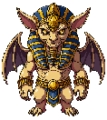
Океан песка, под которым погребены забытые царства. Древние стражи-исполины стерегут гробницы, а под барханами скользят песчаные черви. Мираж сулит воду — но чаще ведёт к костям тех, кто поверил.An ocean of sand burying forgotten kingdoms. Colossal guardians watch over the tombs while sand-worms glide beneath the dunes. A mirage promises water — but more often leads to the bones of those who believed.
«Каменная маска Сетха раскалывается, и пески вновь умолкают над гробницами.Seth's stone mask cracks, and the sands fall silent over the tombs once more.»
БезднаThe Abyss
Рана на теле мира, откуда хлынула тьма. Здесь нет ни верха, ни низа — лишь голод древнего зла, что пожирает свет. Дойти до сердца Бездны и не сгинуть смогли лишь те, чьё пламя в груди ярче любой звезды.A wound upon the body of the world, from which the dark first poured. There is no up nor down here — only the hunger of an ancient evil that devours light. Only those whose inner flame burns brighter than any star reach its heart and live.
«Сангра низвергнута в Бездну, что её породила. Голод тьмы отступает.Sangra is cast back into the Abyss that bore her. The hunger of the dark recedes.»
Звёздная пустошьAstral Waste
За изнанкой Бездны раскинулась пустошь павших светил. Здесь дрейфуют осколки созвездий и духи, что были звёздами; их свет холоден и голоден. Говорят, кто пройдёт пустошь, услышит имя самой первой звезды.Past the underside of the Abyss spreads a waste of fallen stars. Shards of constellations drift here, and spirits that once were stars — their light cold and hungry. They say whoever crosses the waste will hear the name of the very first star.
«Нихиль гаснет, как догоревшая звезда, и пустошь озаряется их прощальным светом.Nihil gutters out like a spent star, and the waste glows with its parting light.»
Сад ВечностиGarden of Eternity
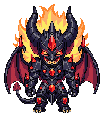
В сердце всего сущего цветёт Сад Вечности — первая роща, из чьих корней проросли все миры. У его врат встал Владыка демонов, последний страж лжи. Но когда он падёт, откроется страшная правда: сам Сад был лишь декорацией, а за ней тянутся нити истинного кукловода.At the heart of all that is blooms the Garden of Eternity — the first grove, from whose roots every world sprouted. At its gates stands the Demon Lord, the last warden of the lie. But when he falls, a dreadful truth is revealed: the Garden itself was mere scenery, and behind it stretch the strings of the true puppeteer.
♻ Терновый Король ВейланVeylan the Thorn King — держит врата в бесконечных повторах актаholds the gate in endless reruns of the act
«Терновый Король склоняется, и Сад Вечности признаёт новую хранительницу.The Thorn King bows, and the Garden of Eternity acknowledges a new warden.»
Изнанка СадаUnderside of the Garden
Когда Владыка демонов пал, Сад осыпался, как краска со старого холста. Под ним — изнанка мира: балки, тросы и мерцающие нити, уходящие ввысь к невидимым рукам. Здесь марионетки бунтуют против собственных струн, а воздух звенит от натянутого шёлка.When the Demon Lord fell, the Garden crumbled like paint off an old canvas. Beneath it lies the underside of the world: beams, cables and shimmering threads climbing toward unseen hands. Here marionettes rebel against their own strings, and the air rings with taut silk.
«Тень оседает пустым плащом — но нити, что её держали, тянутся ещё выше.The shade collapses into an empty cloak — yet the strings that held it climb higher still.»
Стеклянная БезднаGlass Abyss
Провал из чёрного стекла, где отражения живут своей жизнью. Здесь героиню встречает двойник — та, кем она могла бы стать, если бы поддалась нитям. Разбитое зеркало укажет дорогу дальше; но, вглядевшись слишком долго, героиня рискует потерять себя в отражении.A chasm of black glass where reflections live lives of their own. Here the heroine's double meets her — the one she might have become had she yielded to the strings. Shatter the mirror and the shards will show the way onward; stare too long and you will lose yourself in the reflection.
«Стекло идёт трещиной, и двойник рассыпается осколками отражённого света.The glass fractures, and the twin scatters into shards of reflected light.»
Пепел ЗвёздAsh of Stars
Там, где умирают звёзды, оседает их пепел — тёплый, голодный, живой. Погасшие светила тянутся к любому теплу, чтобы вспыхнуть в последний раз. Пожиратель душ Найтара бродит между ними, собирая догорающие жизни в свою корону.Where stars die, their ash settles — warm, hungry, alive. Burnt-out suns reach for any warmth, longing to flare one last time. Naythara the Soul-Devourer wanders among them, gathering guttering lives into her crown.
«Корона погасших звёзд меркнет — украденные судьбы возвращаются их хозяевам.Its crown of spent stars dims — the stolen fates return to those they were torn from.»
Нити МирозданияThreads of Creation
Гигантское полотно, где каждая нить — чья-то судьба, а каждый узел — прерванная жизнь. Ткачиха Кошмаров Велисса сидит за станком, вплетая в узор дурные сны смертных. Порви не ту нить — и целый мир исчезнет, будто его и не было.A colossal weave where every thread is someone's fate and every knot a life cut short. Velissa the Nightmare-Weaver sits at the loom, working mortals' bad dreams into the pattern. Tear the wrong thread and an entire world vanishes as if it never was.
«Станок замолкает, и дурные сны развеиваются, не сплетённые до конца.The loom falls silent, and the nightmares unravel before they are finished.»
Престол ЗабвенияThrone of Oblivion
Холодный зал у самого края всего, где на троне из потухших имён восседает Падший хранитель Юф. Он не сражается — он забывает героиню, и вместе с памятью тает её сила. Лишь тот, кто помнит, зачем пришёл, минует этот порог.A cold hall at the very edge of everything, where Yuf the Fallen Warden sits on a throne of extinguished names. It does not fight — it forgets the heroine, and with her memory her strength melts away. Only those who remember why they came may pass this threshold.
«Трон из имён рушится — и героиня вспоминает своё имя, целое и незабытое.The throne of names collapses — and the heroine remembers her own, whole and unforgotten.»
Театр ИстинногоTheatre of the True One
Пустой театр на изнанке реальности, где каждый герой и каждый злодей был лишь куклой на нитях. В свете единственного софита ждёт Кассий, истинный владыка — тот, кто дёргал за струны Кукольника, Владыки демонов и самой судьбы. Последний акт начинается. Кто здесь зритель, а кто — марионетка?An empty theatre on the underside of reality, where every hero and every villain was only a puppet on strings. In the light of a single spotlight waits Cassius, the True Sovereign — the one who pulled the strings of the Puppeteer, the Demon Lord and fate itself. The final act begins. Who here is the audience, and who the marionette?
«Последняя нить рвётся. Кукловод падает со сцены, и мир — впервые за всё время — принадлежит только героине. Занавес.The last thread snaps. The puppeteer falls from the stage, and the world — for the first time ever — is yours alone. Curtain.»
⚔ Тактика на владыкBoss Tactics
Подробно по каждому владыке: КОГДА срабатывает механика (процент здоровья или таймер), ЧТО он делает и КАК его бить. Ни одна механика не просит считать касания: всё решают окна, выбор, стихия, удержание одним пальцем и пропсы со своим здоровьем.Every lord in detail: WHEN the mechanic fires (health % or timer), WHAT it does and HOW to beat it. No mechanic asks you to count taps: windows, choices, elements, one-finger holds and props with their own health decide everything.
🔒 Печать вратThe Gate Seal
Владыка врат приходит только к готовому отряду. Пока в строю нет нужного состава, на узле врат лежит печать: владыка не появляется, а на печати написано, чего не хватает и где это взять. Треш глубины врат при этом можно спокойно фармить — никаких скрытых штрафов к урону нет.
SSR и SSSR считаются и за «SR или выше». Лесенка выполнима одними бесплатными героинями при нулевой удаче. Каждая бесплатная выдача — выбор «1 из 3»: SSR на входе в акт 3, SSR на входе в акт 4 (если бесплатных легендарок меньше двух — призванные и купленные не в счёт), SR на входе в акт 5, SSR на входе в акты 9 и 11; гарант SR каждые 10 круток всегда приносит героиню, а если на вратах актов 1–3 не хватает самих героинь, у печати ждёт бесплатная R на выбор (подробнее — в «Героинях»).
Владыка, похищающий напарницу на входе в акт (шанс 15%, см. «Плен владыки»), никогда не берёт ту, без которой печать его акта стала бы невыполнимой.
A gate lord only comes to a ready squad. While the fielded squad lacks the required line-up, the gate node carries a seal: the lord doesn't appear, and the seal tells you what is missing and where to get it. You can farm the gate depth's trash meanwhile — there are no hidden damage penalties.
SSR and SSSR also count as “SR or higher”. The ladder can be met with free heroines alone, with zero luck. Every free grant is a pick-1-of-3: an SSR on entering act 3, an SSR on entering act 4 (if you hold fewer than two free legendaries — pulled and bought ones don’t count), an SR on entering act 5, an SSR on entering acts 9 and 11; the SR pity every 10 pulls always brings a heroine, and if the gates of acts 1–3 find you short of heroines at all, a free R of your choice waits at the seal (see “Heroines”).
A lord who kidnaps a companion as you enter an act (a 15% chance, see “Lord's Captivity”) never takes the one without whom his act's seal could not be met.
| АктAct | Владыка выходит, еслиThe lord appears if |
|---|---|
| 1 | 2 героини в строю2 heroines fielded |
| 2 | 3 героини в строю3 heroines fielded |
| 3 | 4 героини в строю4 heroines fielded |
| 4–5 | 4 героини в строю и 1 SR или выше4 heroines fielded and 1 SR or higher |
| 6–7 | 2 SR или выше2 SR or higher |
| 8–9 | 3 SR или выше3 SR or higher |
| 10–11 | 1 SSR или выше1 SSR or higher |
| 12–13 | 2 SSR или выше2 SSR or higher |
| 14 | 3 SSR или выше3 SSR or higher |
⚔ Владыки врат (акты 1–14)Gate Lords (acts 1–14)
Здоровье владыки рассчитано так, чтобы бой занимал его таймер (60 с, Владыка демонов 75 с, финал 90 с) с поправкой на окна его механик. Кроме порогов своей механики, у каждого стандартные пороги 75/50/25% (у Владыки демонов и финала 66/33/15%) — это полы фаз: урон не опускает владыку ниже, пока фаза не сыграна. Бонус ко времени из всех источников — не больше +20 с, заморозка таймера — не дольше 20 с за бой. Не уложилась — врата остаются, а ты возвращаешься фармить и расти.
Акт 1 · Сильвина, Мать Гнилокорня (60 с · стихия ⛰️ земля, слабость — 🌪️ ветер). На 50% из земли встают три сердца-корня, у каждого 3% её здоровья. Пока хоть одно живо, урон уходит в сердца, а она лечится на 1% в секунду. Удар и заклинания бьют сердца сами; отряд целит в них только под «Командиром», без него его урон пропадает. Сломала все три — 10 с она не лечится вовсе. Как бить: сердца — это просто здоровье, ломай их всем, что есть, и сразу добивай.
Акт 2 · Стылый Наместник Кольдрак (60 с · стихия ❄️ лёд, слабость — 🔥 огонь). Бой начинается с отряда во льду: каждая напарница оттаивает сама через 6 с — или через 1.5 с, если в деле огонь (огненное оружие героини или огненная напарница). Касания лёд не ломают. На 50% он одевается в ледяной панцирь: весь урон ×0.5, кроме огня, заклинаний и «Пробоя»; панцирь трескается, когда снимешь ещё 20% его здоровья. Как бить: огонь, «Метеор» и «Пробой» на панцирь.
Акт 3 · Пепельный Тиран Магмар (60 с · стихия 🔥 огонь, слабость — ✨ свет). Его дыхание ходит по кругу 6 с на 6 с: пока он дышит огнём, получает урон ×0.75 и горит его кровожадность; в паузе — ×1.3. Кровожадность лечит его, пока героиня промахивается (подробно — в «Аурах врагов»). На 20% он закрывается пепельной пластиной: урон ×0.6, пока не бьёшь светом или не держишь «Стазис». Как бить: меткость, рывки урона в паузы дыхания, свет на пластину.
Акт 4 · Сумрачный Жрец Ноктис (60 с · стихия 🌌 бездна, слабость — ⛰️ земля). Напарницы стихии бездны рядом с ним бьют на 30% слабее. Весь бой висит сон: героиня засыпает на 2 с из каждых 9 с, за секунду до волны мелькает 💤. На 50% арена гаснет и вместо него встаёт Глаз — 10% его здоровья: пока Глаз цел, весь урон уходит в него, причём удар героини — лишь на 65%, а отряд и заклинания — в полную силу. Как бить: отряд не из бездны, иммунитет ко сну, земля.
Акт 5 · Гробничный Фараон Сетх (60 с · стихия 🌪️ ветер, слабость — ❄️ лёд). Весь бой в броне: урон по нему −15% («Пробой» снимает). С самого начала и на 50% перед ним встаёт саркофаг — 4% его здоровья. Пока саркофаг цел, весь урон уходит в него, и удар героини бьёт его лишь на 35%; отряд и заклинания — в полную силу. Как бить: темп отряда, «Метеор», лёд.
Акт 6 · Кровавая Владычица Сангра (60 с · стихия ✨ свет, слабость — 🌌 бездна). На 70% и 30% она выпускает стаю из 6 мышей. Верная выдаёт себя алым отсветом (при меткости от 90% — ярче). Верную надо удержать пальцем 0.6 с — Сангра теряет 8% здоровья. Касание неверной сразу лечит её на 25% здоровья (у каждой мыши откат 1 с), а верная после ошибки вспыхивает ярче. Пока стая жива, ниже порога её не опустить. Как бить: спокойно найти верную — спам всеми пальцами наказан куда сильнее, чем награждён.
Акт 7 · Звёздный Пожиратель Нихиль (60 с · стихия ✨ свет, слабость — 🌌 бездна). Под ним копится пожирание — +2.4% в секунду, и весь урон по нему режется на эту долю. Каждые 6 с вспыхивает созвездие из трёх звёзд с номерами (живут 4.5 с): касание по порядку 1→2→3 снимает 15% пожирания, ошибка в порядке добавляет 5%. Криты по нему бьют на 85% своей прибавки, зато каждый крит героини снимает 0.3% пожирания, крит отряда — 0.15%. Как бить: внимательные пальцы, бездна.
Акт 8 · Владыка демонов (75 с). Кольцо стихий на него не действует — у него свои стойки, они меняются каждые 15 с: в стойке света его бьёт бездна ×1.25, а свет режется ×0.6; в стойке бездны его бьёт земля ×1.25, а бездна режется ×0.6. Кровожадность горит весь бой. На 66% и 33% он предлагает Пакт — выбрать одно: изгнать на бой самую слабую напарницу (остальные +25% урона) или ослабить свой удар на 20% (отряд +40%). Пока не выбрала, ниже порога он не опустится. Как бить: два стихийных инструмента в отряде и пакт под свой билд.
Акт 9 · Тень Кукловода Морвейн (60 с · стихия ⛰️ земля, слабость — 🌪️ ветер). Морок весь бой: героиня и отряд промахиваются на 8% чаще. Каждые 6 с нить связывает случайную напарницу (SSSR не поддаются): пока нить цела, её взмахи лечат его вместо урона. Нить режет удержание портрета 0.8 с, любой удар ветром или любое заклинание. Как бить: ветер, SSSR, свободный палец на портретах.
Акт 10 · Зеркальница Мирелла (60 с · стихия ❄️ лёд, слабость — 🔥 огонь). Лёгкая броня: урон по ней −8%. На 66% и 33% зеркало копирует самый сильный источник твоего урона за последние 10 с (удар, отряд или заклинания) и на 6 с гасит его в ноль, а остальные источники бьют ×1.3. Периодический урон зеркало не трогает. Как бить: второй источник урона, огонь.
Акт 11 · Пожиратель душ Найтара (60 с · стихия 🔥 огонь, слабость — ✨ свет). Долги судьбы: каждый крит героини (не больше 1 в секунду) и каждое заклинание — стак долга. Каждые 10 с стаки превращаются в щит по 0.2% здоровья владыки за стак; отряд ломает этот щит вдвое быстрее, «Метеор» раскалывает целиком. Иссушение маны в этом бою молчит. На 50% на напарниц ложатся маски: в маске она бьёт на 50%, пока не удержишь её портрет 1 с. Как бить: отряд или смешанный билд, свет.
Акт 12 · Ткачиха Кошмаров Велисса (60 с · стихия 🌌 бездна, слабость — ⛰️ земля). Сон: героиня засыпает на 2 с из каждых 9 с. Каждые 8 с появляется кошмар (1.5% её здоровья, не больше 3 разом); пока живы 2 и больше, героиня спит. Кошмары — просто здоровье: их бьёт касание, а отряд сам отдаёт им 50% каждого взмаха (лишнее летит во владычицу). Как бить: отряд, иммунитет ко сну, земля.
Акт 13 · Падший хранитель Юф (60 с · стихия 🌪️ ветер, слабость — ❄️ лёд). Каждые 10 с — щит на 2.4 с (урон ×0.2); стужа владыки в этом бою молчит. На 75/50/25% приходит Забвение: самая сильная напарница забыта на 12 с — если не удержать её портрет 1.5 с. Саппорт в строю (Святая Серафина, Жрица Аура, Послушница Ро, Оруженосец Мия) помнит её сам, и Забвение не срабатывает. Как бить: глубокий отряд, саппорт, лёд.
Акт 14 · Кассий, истинный владыка (90 с · стихия ✨ свет, слабость — 🌌 бездна). Финал — ремикс всего пути, пороги 66/33/15%. С начала — ледяной панцирь до 80% здоровья (урон ×0.65, кроме удара героини, огня, заклинаний и «Пробоя»); на 66% — зеркало Миреллы; на 33% — нити Морвейна и стойки Владыки демонов разом; на 15% нити и стойки гаснут, приходит Забвение Юф. Кровожадность горит весь бой. Полного исцеления нет. Как бить: всё выученное за 13 актов.
A lord's health is sized so that the fight fills his timer (60 s, the Demon Lord 75 s, the finale 90 s), allowing for his mechanic's windows. Besides his own mechanic thresholds, each has the standard 75/50/25% thresholds (66/33/15% for the Demon Lord and the finale) — these are phase floors: damage can't push the lord lower until the phase has played out. Bonus time from all sources is capped at +20 s, a timer freeze at 20 s per fight. Run out of time and the gate stays — you go back to farm and grow.
Act 1 · Sylvina, Mother of Rotroot (60 s · element ⛰️ earth, weak to 🌪️ wind). At 50% three root-hearts rise, each with 3% of her health. While any lives, damage goes into the hearts and she heals 1% a second. Strikes and spells hit the hearts by themselves; the squad targets them only under “Commander”, otherwise its damage is lost. Break all three and she cannot heal for 10 s. How to win: the hearts are just health — smash them with everything and press on.
Act 2 · Koldrak the Frozen Vassal (60 s · element ❄️ frost, weak to 🔥 fire). The fight opens with the squad frozen: each companion thaws on her own after 6 s — or after 1.5 s if fire is involved (the heroine's fire weapon or a fire companion). Taps don't break the ice. At 50% he dons an ice shell: all damage ×0.5 except fire, spells and Pierce; it cracks once you strip another 20% of his health. How to win: fire, Meteor and Pierce on the shell.
Act 3 · Magmar the Ash Tyrant (60 s · element 🔥 fire, weak to ✨ holy). His breath cycles 6 s on, 6 s off: while he breathes fire he takes ×0.75 damage and his bloodlust burns; in the pause he takes ×1.3. Bloodlust heals him while the heroine misses (see “Enemy Auras”). At 20% he raises an ash plate: damage ×0.6 unless you strike with holy or hold Stasis. How to win: accuracy, bursts in the breath pauses, holy on the plate.
Act 4 · Noctis the Dusk Priest (60 s · element 🌌 void, weak to ⛰️ earth). Void companions near him hit 30% weaker. A sleep aura hangs over the whole fight: the heroine dozes 2 s out of every 9 s, with a 💤 flash one second before. At 50% the arena goes dark and an Eye takes his place — 10% of his health: while it stands, all damage goes into it, the heroine's strike at only 65%, the squad and spells at full force. How to win: a non-void squad, sleep immunity, earth.
Act 5 · Pharaoh Seth of the Tomb (60 s · element 🌪️ wind, weak to ❄️ frost). Armored all fight long: damage to him −15% (Pierce ignores it). At the start and at 50% a sarcophagus rises before him — 4% of his health. While it stands, all damage goes into it and the heroine's strike hits it at only 35%; the squad and spells at full force. How to win: squad tempo, Meteor, frost.
Act 6 · Sangra the Blood Sovereign (60 s · element ✨ holy, weak to 🌌 void). At 70% and 30% she looses a swarm of 6 bats. The right one betrays itself with a crimson glint (brighter at 90%+ accuracy). Hold the right one for 0.6 s — Sangra loses 8% of her health. Touching a wrong one heals her 25% of her health at once (each bat has a 1 s cooldown), and after a mistake the right one flares brighter. While the swarm lives you can't push her past the threshold. How to win: calmly find the right bat — spamming with every finger is punished far harder than it pays.
Act 7 · Nihil the Star-Eater (60 s · element ✨ holy, weak to 🌌 void). A devour gauge fills under him — +2.4% a second, and all damage to him is cut by that share. Every 6 s a constellation of three numbered stars flares (they live 4.5 s): touching them in order 1→2→3 removes 15% of the devour, a wrong order adds 5%. Crits on him keep 85% of their bonus, but every heroine crit strips 0.3% of the devour, a squad crit 0.15%. How to win: attentive fingers, void.
Act 8 · The Demon Lord (75 s). The element ring doesn't touch him — he has his own stances, switching every 15 s: in the holy stance void hits him ×1.25 and holy is cut ×0.6; in the void stance earth hits him ×1.25 and void is cut ×0.6. Bloodlust burns all fight. At 66% and 33% he offers a Pact — pick one: banish your weakest companion for the fight (the rest +25% damage) or weaken your own strike by 20% (squad +40%). Until you choose, he won't drop past the threshold. How to win: two elemental tools in the squad and a pact that fits your build.
Act 9 · Morvaine, Shade of the Puppeteer (60 s · element ⛰️ earth, weak to 🌪️ wind). A haze all fight: the heroine and the squad miss 8% more often. Every 6 s a thread binds a random companion (SSSR resist): while it holds, her swings heal him instead of hurting. A 0.8 s hold on her portrait, any wind hit or any spell cuts the thread. How to win: wind, SSSR, a free finger on the portraits.
Act 10 · Mirella the Mirror-Maiden (60 s · element ❄️ frost, weak to 🔥 fire). Light armor: damage to her −8%. At 66% and 33% a mirror copies the strongest source of your damage over the last 10 s (strike, squad or spells) and zeroes it for 6 s, while the other sources hit ×1.3. Damage over time is untouched. How to win: a second damage source, fire.
Act 11 · Naythara the Soul-Devourer (60 s · element 🔥 fire, weak to ✨ holy). Debts of fate: every heroine crit (at most 1 a second) and every spell adds a debt stack. Every 10 s the stacks turn into a shield of 0.2% of the lord's health per stack; the squad breaks it twice as fast, Meteor shatters it outright. The mana drain stays silent in this fight. At 50% masks fall on the companions: a masked one hits at 50% until you hold her portrait for 1 s. How to win: a squad or mixed build, holy.
Act 12 · Velissa the Nightmare-Weaver (60 s · element 🌌 void, weak to ⛰️ earth). Sleep: the heroine dozes 2 s out of every 9 s. Every 8 s a nightmare appears (1.5% of her health, at most 3 at once); while 2 or more live, the heroine sleeps. Nightmares are plain health: a touch hits them, and the squad gives them 50% of each swing on its own (the rest flies into her). How to win: the squad, sleep immunity, earth.
Act 13 · Yuf the Fallen Warden (60 s · element 🌪️ wind, weak to ❄️ frost). Every 10 s a shield rises for 2.4 s (damage ×0.2); the lord's frost stays silent in this fight. At 75/50/25% comes Oblivion: your strongest companion is forgotten for 12 s — unless you hold her portrait for 1.5 s. A support in the squad (Saint Seraphina, Priestess Aura, Acolyte Ro, Squire Mia) remembers her by herself, and Oblivion fails. How to win: a deep squad, a support, frost.
Act 14 · Cassius, the True Sovereign (90 s · element ✨ holy, weak to 🌌 void). The finale — a remix of the whole road, thresholds 66/33/15%. From the start an ice shell down to 80% health (damage ×0.65 except the heroine's strike, fire, spells and Pierce); at 66% Mirella's mirror; at 33% Morvaine's threads and the Demon Lord's stances together; at 15% threads and stances fade and Yuf's Oblivion arrives. Bloodlust burns all fight. There is no full heal. How to win: everything the 13 acts taught you.
🗝 Одноразовые подземельяOne-time Dungeons
Владыка подземелья — один многофазный бой на 50 с с порогами 75/50/25%; на большинстве порогов он закрывается куполом в 10% здоровья (купол мгновенно раскалывает «Метеор»). Здоровье считается как у владыки врат того же акта: сила, которую акт требует на 7-й глубине, на все 50 с боя, с поправкой акта на владык и ×1.3 сверху — на купол и щиты. Провал механики больше не исцеляет владыку целиком и не начинает фазы заново — он лишь возвращает себе +25% здоровья. Нажатия заменены удержанием одного пальца. Проклятие героини длится 60 с (удар ×0.6), тяжёлое — 120 с (×0.5); золотом его больше не снять.
Логово Корнегрыза · Корнегрыз Грольмар (1 акт) — на 75/50/25% зарывается на 6 с, у ног отряда вспухают три бугра — сильнее трясётся верный. Выкопай верный удержанием 1.2 с — он вылетит и получит 5 с твоей силы. Не тот бугор или не успела — он залечивает +25% здоровья.
Ледяная гробница · Страж гробницы Фростан (2 акт) — на каждом пороге запечатывает напарницу в глыбу: удержание портрета 1.2 с, и на это 5 с. Не успела — глыба вечная, напарница выбывает до конца боя.
Кузня Пепла · Пепельный кузнец Вулмар (3 акт) — каждые 8 с раскаляется на 4 с: удар героини по нему не проходит, а жар лечит его на 2.5% в секунду, пока бьёшь. Отряд и заклинания бьют как обычно — переждать раскал руками, работать отрядом.
Чертог Теней · Тень чертога Умбрель (4 акт) — на 75/50/25% становится прозрачной и неуязвимой и ставит две копии; настоящая плотнее и с тенью под ногами. Развей копию удержанием 0.8 с: настоящая — Тень снова уязвима; фальшивка — она залечивает +25% и проклинает героиню.
Гробница Дюн · Царица дюн Нефара (5 акт) — песочные часы утекают за 7 с; досыпались — Царица возвращает себе 30% здоровья. Переверни часы удержанием 0.8 с — счёт начнётся заново. Часы стоят весь бой.
Сердце Бездны · Сердце Бездны Иргот (6 акт) — каждые 6 с каменеет на 6 с — неуязвим. Удар по камню даёт «Раскол»: −20% твоего урона по нему до конца боя (до 5 раз). Переждала окно молча — «Терпение»: +20% урона по нему (до 5 раз).
Обсерватория Звёзд · Погасшая звезда Астельм (7 акт) — зажигает 4 звезды на 3 с; сбей все касаниями — ничего не будет, за каждую несбитую она пьёт свет и лечится на 20%. Между волнами 5 с.
Оранжерея Вечности · Первоцвет Флориан (8 акт) — каждые 7 с оплетает напарницу лозой: сними путы удержанием портрета 0.8 с за 3 с. Не успела — она становится зелёным элементалем до конца боя и каждые 5 с лечит его на 5%.
Провал Изнанки · Пожиратель Грумвор (9 акт) — на каждом пороге выставляет зеркало — 3% его здоровья. Пока стекло цело, весь урон уходит в него; ломается любым уроном.
Зеркальная Бездна · Зеркальный страж Кристан (10 акт) — раз в 10 с поднимает зеркального двойника (не больше 4): каждый режет весь урон ×0.65, вместе они перемножаются. Развей двойника удержанием 0.8 с.
Пепелище Светил · Звёздный пепел Пиррекс (11 акт) — три угля тлеют весь бой и раскаляются примерно за 8 с; раскалённый каждые 5 с лечит его на 22% и выжигает 75 маны. Одно касание остужает уголь целиком.
Ткацкая Судеб · Пряха Аранея (12 акт) — в начале тянет нити к трём напарницам и ещё одну каждые 12 с: в нити напарница бьёт вполсилы. Порвать нить можно удержанием 0.8 с, но каждая порванная — −15% твоего урона по ней до конца боя. А если нитей не осталось ни одной — проклятие. Держи ровно одну.
Чертог Забвения · Хранитель памяти Люрд (13 акт) — каждые 10 с стирает одно твоё заклинание до конца боя; при пустой мане ещё и проклинает героиню. Наказывает медлительность — заканчивай быстрее и держи хоть каплю маны.
Театр Марионеток · Кукловод Арлекс (14 акт) — открывает бой во всю силу: проклятие на героиню (удар ×0.4, пока бой идёт) и весь отряд в клетках разом — каждая клетка открывается удержанием портрета 1.5 с. На SSSR это не действует.
A dungeon lord is one multi-phase fight of 50 s with thresholds at 75/50/25%; at most thresholds he hides under a dome worth 10% of his health (Meteor shatters it instantly). His health is sized like a gate lord of the same act: the power his act asks for at depth 7, over the full 50 s of the fight, with the act's lord factor and ×1.3 on top for the dome and shields. Failing a mechanic no longer heals him fully or restarts the phases — he just takes back +25% of his health. Tap counts are replaced with one-finger holds. A heroine curse lasts 60 s (strike ×0.6), a heavy one 120 s (×0.5); gold no longer lifts it.
· Grolmar the Rootgnawer (act 1) — at 75/50/25% he burrows for 6 s and three mounds swell by the squad's feet — the right one shakes harder. Dig it out with a 1.2 s hold — he pops up and takes 5 s of your power. Wrong mound or too slow — he heals +25% of his health.
· Frostan the Tomb Warden (act 2) — at each threshold he seals a companion in ice: hold her portrait for 1.2 s, within 5 s. Too slow — the ice turns permanent and she's out for the fight.
· Vulmar the Ash Smith (act 3) — every 8 s he glows white-hot for 4 s: the heroine's strike doesn't land, and the heat heals him 2.5% a second while you keep hitting. The squad and spells hit as usual — wait out the heat with your hands, let the squad work.
· Umbrel the Hall Shade (act 4) — at 75/50/25% she turns transparent and invulnerable and raises two copies; the real one is denser, with a shadow at its feet. Dispel a copy with a 0.8 s hold: the real one makes the Shade vulnerable again; a decoy heals her +25% and curses the heroine.
· Nefara the Dune Queen (act 5) — her hourglass runs out in 7 s; when it empties the Queen takes back 30% of her health. Flip it with a 0.8 s hold to restart the count. The hourglass stays all fight.
· Irgoth, Heart of the Abyss (act 6) — every 6 s he turns to stone for 6 s — invulnerable. Striking the stone gives you “Sunder”: −20% of your damage to him for the fight (up to 5 times). Wait the window out in silence — “Patience”: +20% damage to him (up to 5 times).
· Astelm the Dead Star (act 7) — she lights 4 stars for 3 s; knock them all out with touches and nothing happens, for each one left she drinks its light and heals 20%. Waves are 5 s apart.
· Florian the Primebloom (act 8) — every 7 s a vine binds a companion: free her with a 0.8 s hold on her portrait within 3 s. Too slow — she turns into a green elemental for the fight and heals him 5% every 5 s.
· Grumvor the Devourer (act 9) — at each threshold he raises a mirror — 3% of his health. While the glass stands all damage goes into it; any damage breaks it.
· Kristan the Mirror Warden (act 10) — every 10 s he raises a mirror double (at most 4): each cuts all damage ×0.65, and they multiply together. Dispel a double with a 0.8 s hold.
· Pyrrex the Star-Ash (act 11) — three embers smoulder all fight and grow white-hot in about 8 s; a hot one heals him 22% and burns 75 mana every 5 s. One touch cools an ember completely.
· Aranea the Weaver (act 12) — she threads three companions at the start and one more every 12 s: a threaded companion hits at half strength. A 0.8 s hold tears a thread, but every torn one costs −15% of your damage to her for the fight. And with no threads left at all — a curse. Keep exactly one.
· Lurd, Keeper of Memory (act 13) — every 10 s he erases one of your spells for the fight; with an empty mana pool he also curses the heroine. He punishes slowness — finish fast and keep a drop of mana.
· Arlex the Puppeteer (act 14) — he opens at full force: a curse on the heroine (strike ×0.4 for the fight) and the whole squad caged at once — each cage opens with a 1.5 s hold on the portrait. SSSR are immune.
⚓ Морской АтласNaval Atlas
Финалы обычных островов носят свои имена (не сюжетных владык) и берут ОДНУ фишку по стилю биома (сердца-корни, замедление, туман, стойка, морок, кошмары или щит) на середине боя, плюс купол-барьер от 12% здоровья на T1 до 27% на T16.
Эманаторы Глубин (финалы островов влияния): Тритос — жажда Бездны (растёт шкала пожирания, сбивай созвездия по порядку); Нерисса — песнь-щит (раз в 5 с закрывается щитом, лови окна); Вельмар — мгла-двойники (прячется среди двух теней; развей ту, что с тенью под ногами, удержанием 0.8 с).
Повелитель Глубин Тааракс — формула владыки острова ×1.5 по здоровью и ×3 по золоту. Всплывает с двумя элементалями (зелёный держит отряд, красный запрещает нажатия): развеять удержанием 1 с можно ТОЛЬКО одного, второй вцепится до конца боя. Выбор без правильного ответа — реши, что тебе сейчас дороже.
Ordinary isle finales carry their own names (not the story lords) and take ONE signature trick by biome style (root-hearts, slow, haze, guard, mist, nightmares or shield) mid-fight, plus a barrier dome from 12% of health at T1 to 27% at T16.
Heralds of the Deep (influence-isle finales): Tritos — Abyss-thirst (a devour gauge fills, tap the constellations in order); Nerissa — song-shield (she shields every 5 s, catch the windows); Velmar — mist-doubles (hides among two shades; dispel the one with a shadow at its feet with a 0.8 s hold).
Tharrax, Overlord of the Deep — an isle lord's formula ×1.5 in health and ×3 in gold. He surfaces with two elementals (green holds the squad, red forbids taps): you may dispel ONLY one with a 1 s hold, the other clings on to the end. A choice with no right answer — decide what matters most right now.
ГероиниHeroines
Героини приходят через Призыв и бесплатные выдачи и бьются в отряде (до 4 в бою). У каждой — своя личная сила, роль (работает, пока она в строю), личная пассивка на вехе уровня, а у легендарок ещё и свой гиммик, меняющий бой. Сила героини к тому же течёт в удар героини через Вдохновение.Heroines arrive through the Summon and free grants and fight in the squad (up to 4 fielded). Each has her own power, a role (active while she is fielded), a personal passive at a level milestone, and legendaries carry a battle-bending gimmick on top. A heroine's power also flows into the hero's strike through Inspiration.
✨ Вдохновение и НаставничествоInspiration & Mentorship
Удар героини и отряд кормят друг друга. Вдохновение: к каждому удару героини добавляется доля личной силы каждой напарницы в строю — у R 1.56%, у SR 2.34%, у SSR 4.5%, у SSSR 7.88%. Наставничество: каждая напарница получает к своей силе долю базы Тренировки по своей полосе — у SR 2×, у R 1.38×, у SSR 3.03×, у SSSR 4.41×. Обе связки берут «сырую» силу до всех множителей, поэтому уровень, купленный «не по билду», не пропадает: уровни героинь растят и удар, а Тренировка растит и отряд.
Присутствие легенды. Удар и отряд — суммы по четырём местам в строю, и одна новая героиня в сумме тонет. Поэтому у легендарок есть своя черта: каждая SSR в строю умножает и удар, и отряд на ×1.15, каждая SSSR — на ×1.25. Две SSR — ×1.32, четыре — ×1.75. Работает, пока она бьётся в строю: героиня на работе в таверне, в клетке или похищенная его не даёт. Присутствие полное, пока легендарка стоит не ниже линии входа — уровня самой сильной из других твоих героинь минус 1 (на эту линию новая легендарка и встаёт); ниже оно уменьшается пропорционально её уровню: на половине линии — половина, легендарка 1-го уровня почти ничего не даёт. Так заменить SR на SSR того же уровня — заметная прибавка и удару, и отряду, а новая легендарка — праздник.
Каждый уровень и Тренировки, и героини даёт +7% силы и стоит на 10% дороже прошлого. Редкость задаёт полосу: личную силу, долю во Вдохновении, наценку на уровень и множитель роли. Внутри полосы у каждой своя личная поправка — у R и SR до ±15%, у легендарок до ±5% (простые героини чуть сильнее, героини с мощным гиммиком — чуть слабее). На карточках ниже «сила ×N» — личная сила относительно обычной R того же уровня.
| редкость | личная сила | Вдохновение | Наставничество | присутствие | цена уровня | роль |
|---|---|---|---|---|---|---|
| R | ×1 | 1.56% | 1.38× | — | ×1 | ×1 |
| SR | ×1.45 | 2.34% | 2× | — | ×1.15 | ×1.4 |
| SSR | ×2.2 | 4.5% | 3.03× | ×1.15 | ×1.3 | ×1.7 |
| SSSR | ×3.2 | 7.88% | 4.41× | ×1.25 | ×1.5 | ×2.2 |
Роль на карточке показана уже с множителем редкости; вехи её уровня углубляют роль дальше. Роли «по владыкам» и «по обычным» складываются в одно ведро (не больше +150%) и действуют и на удар, и на отряд. Крит из ролей идёт героине: шанс — на 30% от записи в роли, множитель — на 50%. Сам уровень героини (опыт) даёт +0.6% ко всему урону за уровень.
Новенькая в строю. Впервые полученная R или SR встаёт на средний уровень четырёх твоих сильнейших минус 3, легендарка — на уровень самой сильной минус 1. Всё ниже этой линии качается за 50% цены — запасную героиню под стихию владыки поднять недорого.
The hero's strike and the squad feed each other. Inspiration: every hero strike adds a share of the own power of every fielded companion — 1.56% for R, 2.34% for SR, 4.5% for SSR, 7.88% for SSSR. Mentorship: every companion adds a share of the Training base to her own power by her band — 2× for SR, 1.38× for R, 3.03× for SSR, 4.41× for SSSR. Both links use raw power before any multipliers, so a level bought “off-build” is never wasted: heroine levels grow the strike too, and Training grows the squad too.
Legend presence. The strike and the squad are sums over four slots, and one new heroine drowns in the sum. So legendaries carry a trait of their own: every fielded SSR multiplies both the strike and the squad by ×1.15, every SSSR by ×1.25. Two SSRs give ×1.32, four give ×1.75. It works while she fights in the squad: a heroine working in the tavern, caged or kidnapped does not give it. Presence is full while the legendary stands at or above the join line — your strongest other heroine's level minus 1 (a new legendary joins right at that line); below it, it shrinks in proportion to her level: half the line gives half, a level-1 legendary gives almost nothing. Swapping an SR for an SSR of the same level is a clear gain for both the strike and the squad, and a new legendary is a celebration.
Every Training or heroine level gives +7% power and costs 10% more than the last. Rarity sets the band: own power, the Inspiration share, the level surcharge and the role multiplier. Within a band each girl has her own small offset — up to ±15% for R and SR, up to ±5% for legendaries (simple heroines a bit stronger, heroines with a mighty gimmick a bit weaker). On the cards below, “power ×N” is her own power relative to a plain R of the same level.
| rarity | own power | Inspiration | Mentorship | presence | level price | role |
|---|---|---|---|---|---|---|
| R | ×1 | 1.56% | 1.38× | — | ×1 | ×1 |
| SR | ×1.45 | 2.34% | 2× | — | ×1.15 | ×1.4 |
| SSR | ×2.2 | 4.5% | 3.03× | ×1.15 | ×1.3 | ×1.7 |
| SSSR | ×3.2 | 7.88% | 4.41× | ×1.25 | ×1.5 | ×2.2 |
The role on a card already includes the rarity multiplier; her level milestones deepen it further. “Vs lords” and “vs regular foes” roles pool into one bucket (capped at +150%) and apply to both the strike and the squad. Crit from roles goes to the hero: chance at 30% of the listed value, multiplier at 50%. The hero's own level (XP) adds +0.6% to all damage per level.
A newcomer joins. A freshly obtained R or SR starts at the average level of your four strongest minus 3; a legendary starts at your strongest heroine's level minus 1. Every level below that line costs 50% — a bench heroine for a lord's element is cheap to raise.
🎁 Бесплатные героини: выбери 1 из 3Free heroines: pick 1 of 3
Каждая бесплатная героиня приходит выбором: три невладенные героини нужной редкости, две из них — те, что сильнее всех помогут твоему строю против владыки ближайших врат, третья — любая. Помечена сильнейшая из трёх. Отбор и метка считают одинаково: его стихию против стихии каждой героини и удара, роль «по владыкам», таймер его боя и средний вклад приёмов за этот бой: крылья и благословения Серафины, поджог Игнары, яд Верделии, ростки Гайи, молнии Аэллы, прилив Нимуэ, звездопад, форму феникса, обморожение Лисанны, рассечения Цубаки, «Чары» Лилит. Когда кампания пройдена или после Отката (эпохи NG+), отбор и метка смотрят не на одного владыку, а на силу твоего лучшего отряда с ней — с её ролью против боссов. Закрыла окно — достанется отмеченная; выдача хранится в сейве и не теряется.
Когда: SR — при входе в акт 5; SSR — при входе в акты 3, 9, 11, а при входе в акт 4 — тем, у кого бесплатных легендарок меньше двух («вторая легенда»: к владыке 4-го акта у каждой героини по меньшей мере две бесплатные; легендарки из Призыва, лавки Эха и покупок не в счёт и её не отменяют); SSR за 50-й этаж Эха Бездны и SSR календаря. Сейв, который к приходу «второй легенды» в игру уже прошёл акт 4, её не получает: обновление сейва подарков не приносит, а лесенка врат на неё не опирается. Если у печати врат актов 1–3 не хватает героинь, там ждёт бесплатная R на выбор. Гарант SR каждые 10 круток Призыва — всегда героиня (сперва невладенная), а не снаряжение. Поэтому лесенка врат закрывается одними бесплатными выдачами даже при нулевой удаче.
Every free heroine arrives as a choice: three heroines you don't own of the right rarity, two of them are the ones that help your line-up most against the next gate lord, the third is any. The strongest of the three is marked. The picks and the mark use the same reckoning: it weighs his element against each heroine's and the strike's, the “vs lords” role, his fight timer and the average share of every kit over that fight: Seraphine's wings and blessings, Ignara's burn, Verdelia's poison, Gaia's sprouts, Aella's lightning, Nimue's tide, the starfall, the phoenix form, Lisanna's frostbite, Tsubaki's cuts, Lilith's Charm. Once the campaign is done, or after a Rewind (NG+ epochs), the picks and the mark look not at one lord but at the power of your best squad with her, her role against bosses included. Close the window and you get the marked one; the grant is kept in your save and never lost.
When: an SR on entering act 5; an SSR on entering acts 3, 9, 11, and on entering act 4 for whoever holds fewer than two free legendaries (“a second legend”: by the lord of act 4 everyone walks with at least two free ones; legendaries from the Summon, the Echo shop or purchases don’t count and never cancel her); an SSR for Echo of the Abyss floor 50 and the calendar SSR. A save that was already past act 4 when the second legend came to the game does not get her: a save update brings no gifts, and the gate ladder does not rely on her. If the gate seal of acts 1–3 finds you short of heroines, a free R of your choice waits there. The Summon's SR pity every 10 pulls is always a heroine (unowned first), never gear. So the gate ladder can be met with free grants alone, even with zero luck.
Крылатая валькирия павшего пантеона. Она ВСЕЛЯЕТСЯ в героиню: та принимает облик Эрис и встаёт в полный рост по центру поля, а напарницы кружат вокруг мелкими валькириями — бьют слабее, но свои роли сохраняют. Сама Эрис не бьёт — бьёт героиня: рука валькирии тяжелее, точнее и чаще находит крит. Владыку на последнем издыхании настигает Суд света, а Владыкам мира от этой руки достаётся втрое.A winged valkyrie of a fallen pantheon. She POSSESSES the heroine: the heroine takes Eris’s form at the centre of the field, while the companions circle her as tiny valkyries — they hit softer but keep their roles. Eris herself does not strike — the heroine does: the valkyrie’s hand falls heavier, truer, and finds crits more often. A lord on his last breath meets the Judgement of light, and World Lords take three times the pain from that hand.
Девочка-вампир, старшая из сестёр смерти (Жница Морана — её младшая сестра; вместе в отряде они дуэт «Сёстры»). Её укус вскрывает неутолимое кровотечение — рана не закроется до самого конца боя. По ногам ползёт зелёный туман: укушенные в нём мягче, а криты героини злее. Напарницы её побаиваются и бьют чуть медленнее.A vampire girl, the elder of the death sisters (Reaper Morana is her younger sister; together in the squad they form the «Sisters» duo). Her bite opens an unquenchable wound — it will not close until the very end of the fight. Green mist creeps along the ground: bitten foes soften in it, and the heroine’s crits grow crueller. The companions are a little afraid of her and attack a touch slower.
Пробудившаяся истинная форма Эллии — крошечная фея с трепещущими крылышками. Она порхает по полю и бьёт залпами фей, а над отрядом идёт золотой дождь — враги роняют больше золота. То и дело она в шутку чеканит напарницу БОЛЬШОЙ МОНЕТОЙ: пока монета зреет, напарница бьёт слабее, а созревшую можно собрать нажатием — за щедрую горсть золота.Ellia’s awakened true form — a tiny fairy with fluttering wings. She flits across the field striking in fairy volleys, and a golden rain falls over the squad — foes drop more gold. Now and then she playfully mints a companion into a BIG COIN: while the coin ripens that companion hits softer, and once it is ripe a tap collects it for a generous pile of gold.
🤝 Дуэт (пара — Снежная Императрица Лисанна): обе в строю — +10% ко всему урону; враг получает +20% от взмаха, если стихия ударившей сменилась за последние 3 с.🤝 Duo (partner — Snow Empress Lisanna): both fielded — +10% to all damage; a swing lands +20% if the striking element changed within the last 3 s.
🤝 Дуэт (пара — Феникс Фейрин): обе в строю — +10% ко всему урону.🤝 Duo (partner — Phoenix Feyrin): both fielded — +10% to all damage.
Последняя из огненных драконов в людском обличье. Её гнев плавил города, а верность — бесценна. Где ступает Игнара, плавится камень и дрожит от жара сам воздух.The last of the fire dragons in human form. Her wrath melted cities; her loyalty, once earned, is beyond price. Where Ignara steps, stone melts and the very air trembles with heat.
🗡 Пока она в коллекции, на каждом этапе на 10 врагов меньше (Нокс и Морана не складываются).🗡 While she is in your collection every stage has 10 fewer foes (Nox and Morana do not stack).
Она шагнула в Бездну и вернулась королевой. Тьма — её платье, страх — её корона. Пока Нокс в отряде, тьма утаскивает тех, кто уже едва дышит, и каждая казнь торопит следующего врага. А пока она в твоём ростере, орды на этапах редеют.She stepped into the Abyss and returned a queen. Darkness is her gown and fear her crown. While Nox is in the squad, the dark drags down those already at death’s door, and every cull hurries the next foe in. And while she is on your roster, the hordes on every stage grow thinner.
Дочь бури. Там, где ступает её нога, небо отвечает громом. Её гроза разгоняет отряд — чем дольше бой, тем чаще мелькают клинки, а с чёрного неба раз за разом бьёт молния в самое сердце врага.Daughter of the storm: where she steps, the sky answers with thunder. Her tempest spurs the squad on — the longer the fight, the faster the blades flash, and lightning falls again and again from the black sky into the foe’s heart.
Воплощённый свет. Она и сама разит, но главное её дело — благословлять: за плечами героини распускаются два ангельских крыла, и пока они горят, её удар мощнее. Когда крылья гаснут, героиня ненадолго опустошена и реже критует. А с вехи мастерства Серафина осеняет отряд чередой благословений.Light incarnate. She strikes too, but her true calling is to bless: two angel wings unfurl behind the heroine’s shoulders, and while they burn her strike is mightier. When the wings fade the heroine is briefly spent and crits less often. And from her mastery milestone Seraphina graces the squad with a choir of blessings.
Безмолвная фехтовальщица. Её меч видели лишь те, кого он уже рассёк. Пока Цубаки в отряде, можно не только нажимать: прижми палец к боевому экрану и веди — за ним тянется светящийся росчерк, и каждое рассечение считается за удар (каждый палец режет сам по себе, а простое касание бьёт слабее). Води быстрее — руби чаще. Её лунный клинок оставляет на враге кровоточащие рассечения, а удар героини бьёт дважды — второй росчерк приходит из тени первого.A silent duelist beneath the moon. Her blade is seen only by those it has already cut — and none of them lived to tell. While Tsubaki is in the squad you can do more than tap: press a finger to the arena and drag — a glowing trail follows it and every stroke counts as a strike (each finger cuts on its own, and a plain tap hits softer). Drag faster to cut more often. Her moon-blade leaves bleeding cuts, and the heroine’s strike lands twice — the second stroke follows from the shadow of the first.
Императрица вечной зимы. Пока она на поле — идёт снег. Её взмахи по владыке копят обморожение: криты по нему бьют всё больнее, а крит героини разбивает лёд в один мощный удар. Владык она леденит и во времени — их таймер длиннее. С Драконицей Игнарой они дуэт «Огонь и лёд».Empress of eternal winter. While she stands on the field it snows. Her swings on a lord build frostbite: crits on him hurt more and more, and a heroine crit shatters the ice in one mighty blow. She chills lords in time as well — their timer runs longer. With Dragoness Ignara she forms the «Fire and Ice» duo.
🤝 Дуэт (пара — Хранительница Сада Верделия): обе в строю — +10% ко всему урону; взмахи Гайи по владыке тоже отравляют его ядом Верделии.🤝 Duo (partner — Garden Warden Verdelia): both fielded — +10% to all damage; Gaia's swings on a lord also poison it with Verdelia's venom.
Древний дух-хранитель рощ Аэрис в облике рогатой девы. Каждый её удар по владыке вплетает в него росток (виден у ног врага). Когда ростков набирается довольно, они ПРОРАСТАЮТ сквозь тушу — из владыки разом вырывается добрый кусок жизни, а корни держат его: таймер длиннее, и удары героини бьют злее. С Верделией они дуэт «Сёстры земли».A guardian spirit of Aeris’ forests in the form of a horned maiden. Each of her hits on a lord weaves a sprout into it; once enough have grown they OVERGROW through the beast — a solid chunk of the lord’s life is torn away at once, and the roots hold him: his timer runs longer and the heroine’s strikes bite harder. With Verdelia she forms the «Earth Sisters» duo.
Демоница страсти из глубин Бездны. Лилит не сражается плечом к плечу — она берёт командование на себя: с ней в отряде шкала Приказов (розовая) копится сама, без перка «Командир». Каждое касание героини — приказ; чем гуще поток приказов, тем злее отряд, а на пике враг очарован и получает больше урона. Под её чарами и напарницы атакуют чуть чаще, а героиня бьёт в полную силу. С Нимуэ они дуэт «Прилив страсти».A demoness of passion from the depths of the Abyss. Lilith does not fight side by side — she takes command: with her in the squad the Orders gauge (pink) fills on its own, no Commander perk needed. Every touch of the heroine is an order; the thicker the stream of orders, the fiercer the squad, and at its peak the foe is charmed and takes more damage. Under her spell the companions attack a little more often, and the heroine still strikes at full power. With Nimue she forms the «Tide of Passion» duo.
🤝 Дуэт (пара — Суккуба Лилит): обе в строю — +10% ко всему урону; каждый взмах Нимуэ даёт героине +2 маны.🤝 Duo (partner — Succubus Lilith): both fielded — +10% to all damage; each of Nimue's swings gives the hero +2 mana.
Хозяйка зачарованных вод. Время от времени она поднимает приливную волну — та смывает с поля целую горсть обычных врагов разом, а по владыке бьёт всей силой прилива и возвращает героине ману. С Суккубой Лилит они дуэт «Прилив страсти»: вода и страсть, как ни странно, ладят.Nimue rises from the lake’s depths only for the worthy. From time to time she raises a tidal wave that sweeps a whole handful of regular foes off the field at once, crashes into a lord with the full force of the tide, and returns mana to the heroine. With Succubus Lilith she forms the «Tide of Passion» duo — water and passion get along, strangely enough.
Колдунья, что больше всего на свете любит ПЕСНИ. Пока Морриган в отряде, героиня бьёт и поёт ей песни безумия: пока удары не стихают, песня шагает вперёд, а допетая до конца оборачивается «Безумным крещендо» — отряд ненадолго бьёт куда злее. На самых тёмных куплетах от напарниц сочится чёрный туман. С вехи мастерства её пряжа порчи сама вьётся вокруг врага.A witch who loves SONGS above all else. While Morrigan is in the squad, the heroine fights and sings her songs of madness: as long as the strikes keep coming the song moves on, and a song sung to the end becomes the «Mad Crescendo» — for a while the squad hits far harder. On the darkest verses black mist seeps from the companions. At her mastery milestone her hexweave coils around the foe on its own.
Ведьму Шанателлу не любит никто — и она платит миру тем же. Пока она в отряде, остальные бьют заметно слабее, а сама Шанателла — злее, и напарницы оборачиваются стаей летучих мышей. Зато с павших врагов сыплются части её уникального супер-сета — Регалий Шанателлы, — а удача к луту растёт. Фарм — её стихия.No one ever loved Shantelle, and she has repaid the world in full. While she is in the squad everyone else hits noticeably softer while Shantelle herself hits harder, and the companions turn into a swarm of bats. But slain foes shed pieces of her unique super-set — Shantelle’s Regalia — and loot luck rises. Farming is her element.
Дева павших созвездий из Звёздной пустоши. Пока она на поле — небо чернеет и вспыхивает россыпью звёзд, а время от времени на врага обрушивается звездопад. Её звёздная мудрость ведёт героиню: поверженные владыки чаще даруют очки древа, а чем дольше длится бой, тем вернее рука героини находит крит.A maiden of fallen constellations from the Star Waste. While she stands on the field the sky turns black and blazes with stars, and now and then a starfall crashes down on the foe. Her star-wisdom guides the heroine: fallen lords grant tree points more often, and the longer a fight lasts, the surer the heroine’s hand finds a crit.
Садовница Сада Вечности, древнее самих богов. Её споры травят врага гнилью, что проедает его заживо, — яд копится стаками. Там, где она ступает, удача к луту растёт. С Гайей они дуэт «Сёстры земли».Verdelia has tended the Garden of Eternity since the dawn of time. Her spores rot the foe with a gnawing decay that eats it alive — the poison builds up in stacks. Where she walks, loot luck grows. With Gaia she forms the «Earth Sisters» duo.
Бессмертная птица в облике девы. Временами она вспыхивает — коснись её (или подожди пару мгновений, она проснётся сама), и Фейрин обернётся ФЕНИКСОМ: несколько мгновений её взмахи бьют вдвое злее, удары героини летят огненными шарами, а отряд у её огня критует чаще. Даже Игнара при виде истинного феникса вспыхивает язычками пламени.An immortal bird in the shape of a maiden. From time to time she flares up — tap her (or wait a moment and she wakes on her own) and Feyrin turns PHOENIX: for a few moments her swings hit twice as hard, the heroine’s strikes fly as fireballs, and the squad by her fire crits more often. Even Ignara flickers with little flames at the sight of a true phoenix.
🤝 Дуэт (пара — Святая Серафина): обе в строю — +10% ко всему урону; крылья Серафины держатся на 2 с дольше.🤝 Duo (partner — Saint Seraphina): both fielded — +10% to all damage; Seraphina's wings last 2 s longer.
Первый луч над миром после Долгой Ночи — она сияет ярче всех в строю. Каждый крит героини наполняет шкалу «Рассвета», а полная шкала на несколько мгновений обостряет криты всего отряда. С Серафиной они дуэт «Рассвет и хор». А с вехи мастерства Аврора окутывает героиню лучами зари.The first ray over the world after the Long Night — she shines brighter than anyone in the ranks. Every heroine crit fills the «Dawn» gauge, and a full gauge sharpens the whole squad’s crits for a few moments. With Seraphina she forms the «Dawn and Choir» duo. At her mastery milestone Aurora wraps the heroine in rays of dawn.
🗡 Пока она в коллекции, на каждом этапе на 10 врагов меньше (Нокс и Морана не складываются).🗡 While she is in your collection every stage has 10 fewer foes (Nox and Morana do not stack).
Та, что приходит за душами. С ней на поле ложится фиолетовый туман. Синие и фиолетовые напарницы рядом с Мораной бьют слабее — их души тянутся к её косе, и за каждую коса рубит злее. Раз в минуту наступает «Час душ»: удары героини проходят сквозь щиты и броню. А пока она в твоём ростере, смерть прореживает орды: врагов на этапе меньше.She who comes for souls. With her on the field a violet mist settles. Blue and violet companions beside Morana hit softer — their souls reach for her scythe, and for each of them the scythe cuts crueller. Once a minute comes the «Hour of Souls»: the heroine’s strikes pass through shields and armor. And while she is on your roster, death itself thins the hordes: fewer foes per stage.
Снайпер ветра. Говорят, её стрела догоняет ложь быстрее, чем та слетает с губ, — а когда кажется, что выстрел был один, вторая стрела уже дрожит в цели.They say her arrow outruns a lie before it leaves the lips — and when the shot seems to be one, a second arrow is already trembling in the mark.
Изучала запретные руны Сумрачного леса. Её магия шепчет — и враги слушаются. Внимательнее всех слушают владыки: под её гибельной руной их броня расползается по швам.She studied the forbidden runes of Gloomwood while others fled it. Her magic whispers — and foes obey. The lords listen closest of all: under her doom rune their armour splits at the seams.
Клятвенный защитник. Не отступает — даже когда отступить разумнее. За её широким щитом рука героини бьёт увереннее и твёрже.A sworn protector who never retreats — even when retreat is wiser. Whole companies have weathered storms behind her shield, and behind it the hero's hand strikes surer and harder.
🤝 Дуэт (пара — Убийца Ная): обе в строю — +10% ко всему урону.🤝 Duo (partner — Slayer Naya): both fielded — +10% to all damage.
Самые быстрые пальцы в Бездне — и к чужому золоту, и к бою. С ней в отряде владыки роняют вдвое больше золота, а частые криты по рядовым врагам то и дело срезают у них кошели.The fastest fingers in the Abyss — both for other people’s gold and for a fight. With her in the squad lords drop twice the gold, and her frequent crits on ordinary foes keep cutting their purses loose.
Дева Стылых пиков. Её сердце холодное — но за своих она растопит и ледник. Первая встреча с ней — самая студёная: первый удар Сольвейг вымораживает врага до костей.A maiden of the Frozen Peaks with a heart of ice. Yet for her own she would melt a glacier — and anyone who threatens them. The first meeting with her is the coldest: Solveig's first strike freezes a foe to the bone.
Подожгла академию (случайно). Теперь жжёт только тех, кто заслужил, — и уж если подожгла, пламя само доедает остатки.She once burned down an entire academy (by accident). Now she burns only those who deserve it — and once she sets a fire, the flame finishes the leftovers on its own.
Стрелок-громовержец. Её стрелы несут заряд бури и бьют по площади. Перед Громовой Аэллой она благоговеет — и в её грозе обращается ручной молнией.An archer whose arrows carry thunder. She strikes a crowd with a bolt that leaps from foe to foe. She stands in awe of Thunder Aella — and in her tempest becomes a tame bolt of lightning.
Храмовая жрица с настоящим нимбом. Её свет хранит отряд и карает нечисть, а каждая её молитва возвращает героине по капле сил.A temple priestess of the Dawn with a true halo. She shields the squad with light, judges the unclean — and every prayer of hers returns the hero a drop of strength.
Правая рука Лилит, безрассудная до отчаяния. Каждое нажатие героини бьёт куда сильнее — но в горячке она путает прицел, и промахов становится больше.Lilith’s right hand, reckless to the point of desperation. Every one of the heroine's taps hits far harder — but in her frenzy she fumbles her aim, and misses pile up.
Поющая дева приливов. Её песнь подгоняет отряд — клинки летят в такт волне. А когда она запевает в полный голос, удары героини отзываются ледяным эхом.A singing maiden of the tides. Her song drives the squad on — blades fly to the rhythm of the wave. And when she sings out in full voice, the heroine’s strikes ring with an icy echo.
Ученица Морриган. Её сглаз точит силу всего отряда — каждый удар ложится злее. А когда героиня наносит серию ударов, Векс ставит на враге метку, и отряд ненадолго бьёт по меченому больнее.A pupil of Morrigan. Her evil eye hones the whole squad — every strike lands crueller. And when the heroine lands a string of strikes, Vex marks the foe, and for a moment the squad hits the marked one harder.
Латница ордена Рассвета. Бьёт молотом света так, что и Бездна крестится.An armored sister of the Order of Dawn. Her hammer of light strikes so hard even the Abyss crosses itself.
Тень среди теней. Её кинжал находит брешь в любой броне раньше, чем жертва успевает вздохнуть. Раненых она не отпускает: над слабеющим врагом её клинки мелькают всё быстрее.A shadow among shadows. Her dagger finds the gap in any armor before the victim can draw a breath. She never lets the wounded go: over a weakening foe her blades flicker ever faster.
Заключила сделку с тенью Бездны. Её проклятья особенно жадны до владык: пока она в отряде, по боссам бьют все заметно сильнее. А с вехи мастерства её удары то и дело ставят на врага фиолетовую метку, что подтачивает его защиту.She struck a bargain with a shade of the Abyss. Her curses hunger for lords above all: while she is in the squad, everyone hits bosses noticeably harder. At her mastery milestone her strikes now and then brand the foe with a violet mark that wears down its defence.
Танец клинков — её молитва. В исступлении она подгоняет весь отряд — напарницы атакуют чаще.The dance of blades is her prayer. In her frenzy she drives the whole squad on — the companions attack more often.
Видит нити судьбы и выбирает самые щедрые. Рядом с ней удача и опыт сами идут в руки.She sees the threads of fate and picks the most generous ones. Luck and experience come to hand of their own accord beside her.
Юная эльфийка из Изумрудной Рощи — первого края Аэрис, куда дотянулась Бездна. Когда лес начал гнить, сородичи ушли вглубь чащи, а она осталась и вышла тьме навстречу. С тех пор идёт рядом с героиней и не отстаёт ни на шаг.A young elf of the Emerald Grove — the first corner of Aeris the Abyss ever reached. When the wood began to rot her kin withdrew deeper into the thicket; she stayed and walked out to meet the dark. Ever since she has walked at the heroine’s side and never fallen a step behind.
Юная следопытка из Изумрудной рощи. Первой вызвалась сопровождать героя — и ни разу не пожалела: её вторая стрела срывается с тетивы раньше, чем первая найдёт цель.A young pathfinder from the Emerald Grove who knows every trail. First to volunteer to walk beside the hero — and never once regretted it: her second arrow leaves the string before the first has found its mark.
Мечтала о рыцарстве с детства. Пока носит щит за старшими, но её удар уже крепок, а глаз намётан на блеск под пылью — где Мия, там и находки богаче.She dreamed of knighthood since childhood. For now she carries shields for her elders, but her strike is already firm — and her eye is keen for a glint under the dust: where Mia goes, the finds are richer.
🤝 Дуэт (пара — Эллия): обе в строю — +10% ко всему урону.🤝 Duo (partner — Ellia): both fielded — +10% to all damage.
Сбежала из храма ради приключений. Её молитвы лечат, посох бьёт больнее, чем кажется, а рядом с ней и наука идёт легче, и удача сама заглядывает в котомку.She fled the temple for adventure with nothing but a prayer book and a staff. Her prayers heal, her staff hits harder than it looks — and beside her, lessons come easier and luck peeks into the satchel all by itself.
Бродячая певунья с лютней-посохом. Её песни поднимают дух отряда и сбивают спесь с врага.A minstrel who roams from village to village. Her songs chase off gloom and lift the whole squad’s spirits.
Кузнечная подмастерье с горячим нравом. Бьёт коротким клинком так же яростно, как раздувает горн. Втайне боготворит Драконицу Игнару — подле неё сама обращается огненным духом.A smith’s apprentice with a temper to match the forge. She forged her first blade herself — and fights with it. Secretly she worships Dragoness Ignara, turning into a spirit of flame at her side.
Речная дева, что плещется в каждом ручье Аэрис. Где журчит её ручеёк, к героине по капле течёт сила; а Нимуэ она любит как старшую сестру — и подле неё обращается духом воды.A river sprite who splashes in every stream of Aeris. Where her brook murmurs, strength trickles to the hero drop by drop; she loves Nimue like an elder sister — and turns into a water spirit at her side.
Мелкий бесёнок на побегушках у Лилит. Дерзкий, но в душе добрый — а в бою любит подловить врага каверзой исподтишка, когда тот совсем не ждёт.A little imp running errands for Lilith. Brash, but good-hearted underneath — and in battle she loves to catch a foe with a sly trick when he least expects it.
Подмастерье колдуньи Морриган. Зубрит руны порчи, хоть пока выходят лишь искры — но втайне грезит Бездной: при Владычице Нокс обращается тёмным духом и служит уже ей.An apprentice to the witch Morrigan. She crams hex runes, though so far only sparks come out — yet secretly she dreams of the Abyss: beside Lady Nox she turns into a dark spirit and serves her instead.
Малышка-светоч из храма Рассвета. Её ладошки сами собой светятся в темноте — и чем страшнее тьма, тем ярче горят: самим владыкам её огонёк жалит больнее всего. А подле Зари Авроры она вьётся светлячком у её плеча.A little light-bearer from the Dawn temple. Her palms glow in the dark all by themselves — and the deeper the darkness, the brighter they burn: her small flame stings the lords themselves worst of all. Beside Aurora the Dawn she flutters like a firefly at her shoulder.
Девочка-кочевница из Песчаного моря. Знает, где под барханом вода, а где — гробница, и никогда не путает одно с другим. Нюх на сокровища у неё с рождения: с побеждённых владык при ней осыпается больше монет, чем те собирались отдать.A nomad girl of the Sand Sea. She knows where water hides beneath the dunes — and where a tomb does — and never mistakes one for the other. Her nose for treasure is inborn: fallen lords shed more coin around her than they ever meant to give.
Дочка углежога с пепельных склонов. В её ладонях вечно тлеет уголёк — она греет им замёрзших и поджигает наглых.A charburner's daughter from the ashen slopes. An ember always smolders in her hands — she warms the frozen with it and singes the insolent.
Найдёныш Звёздной пустоши. Её зрачки мерцают, как далёкие созвездия, а во сне она шепчет имена погасших звёзд. Под её мерцающим взглядом удары отряда ложатся точнее — звёзды шепчут ей, куда бить.A foundling of the Star Waste. Her pupils flicker like distant constellations, and in her sleep she whispers the names of extinguished stars. Under her shimmering gaze the squad's strikes land truer — the stars whisper where to aim.
Юный дух-садовник из Сада Вечности. Где она пройдёт, там и в пепле проклёвывается зелёный росток. В долгом бою с владыкой она растёт на глазах — и сила её тоже; а подле Хранительницы Гайи льнёт к ней зелёным духом.A young gardener-spirit of the Garden of Eternity. Wherever she passes, a green sprout pushes up even through ash. In a long fight with a lord she grows visibly — and her strength with her; beside Guardian Gaia she clings to her as a green spirit.
Формы и синергииForms & Synergies
Магия Фантазма меняет облик и связывает героинь: прислужницы обращаются духами ради хозяек, стихии и старые дружбы в строю дают общие бонусы, а огонь феникса перекраивает даже героиню.Phantasm magic reshapes form and binds heroines together: familiars dissolve into spirits for their mistresses, elements and old friendships in the squad grant shared bonuses, and phoenix fire remakes even the heroine.
🤝 Синергии строяSquad Synergies
Бонусы строя зависят от того, кто стоит в отряде вместе. Все синергии строя вместе (пары стихий, дуэты и «Полный строй») дают не больше +40% — если сумма выше, каждая часть пропорционально ужимается. Всё это складывается в общее ведро «ко всему урону» вместе с перками и снаряжением; текущие бонусы видны в «Статистике».
Пары стихий. Есть в строю обе стихии пары — пара работает. Засчитываются первые 2 подходящие пары (в порядке таблицы). Бури (Аэлла, Юки) считаются ветром. Прислужница-дух в паре не участвует.
Squad bonuses depend on who stands in the squad together. All squad synergies combined (element pairs, duos and Full Formation) give at most +40% — above that every part shrinks proportionally. They all pool into the shared “all damage” bucket together with perks and gear; your current bonuses are shown in Statistics.
Element pairs. If both elements of a pair are fielded, the pair is active. The first 2 matching pairs count (in table order). Storm heroines (Aella, Yuki) count as wind. A familiar in spirit form takes no part.
| ПараPair | СтихииElements | БонусBonus |
|---|---|---|
| ПожарWildfire | огонь + ветерfire + wind | +8% ко всему урону+8% to all damage |
| МетельBlizzard | лёд + ветерfrost + wind | +8% к темпу отряда+8% squad tempo |
| МогилаGrave | земля + безднаearth + void | +8% урона по владыкам+8% damage vs lords |
| СолнцеSun | свет + огоньholy + fire | +8% шанса крита героини+8% heroine crit chance |
| ЗатмениеEclipse | бездна + светvoid + holy | +8% ко всему урону+8% to all damage |
| МерзлотаPermafrost | лёд + земляfrost + earth | +2 с к таймеру владык+2 s to lord timers |
Дуэты. Героини, связанные лором, вдвоём в строю дают +10% ко всему урону, а у шести дуэтов есть ещё и общий эффект. Прежних «вражд», которые обваливали урон отряда, больше нет.
Duos. Heroines bound by lore give +10% to all damage when fielded together, and six duos carry a shared effect on top. The old “feuds” that crashed squad damage are gone.
| ДуэтDuo | ГероиниHeroines | БонусBonus |
|---|---|---|
| СёстрыSisters | Жница Морана + МорванаReaper Morana + Morvana | +10% ко всему+10% to all |
| Огонь и лёдFire and Ice | Драконица Игнара + Снежная Императрица ЛисаннаDragoness Ignara + Snow Empress Lisanna | +10% ко всему; враг получает +20% от взмаха, если стихия ударившей сменилась за 3 с+10% to all; a swing lands +20% if the striking element changed within 3 s |
| Прилив страстиTide of Passion | Владычица Озера Нимуэ + Суккуба ЛилитLady of the Lake Nimue + Succubus Lilith | +10% ко всему; взмахи Нимуэ дают героине +2 маны+10% to all; Nimue's swings give the hero +2 mana |
| Сёстры землиEarth Sisters | Хранительница Гайя + Хранительница Сада ВерделияGuardian Gaia + Garden Warden Verdelia | +10% ко всему; взмахи Гайи по владыке отравляют его ядом Верделии+10% to all; Gaia's swings on a lord poison it with Verdelia's venom |
| Рассвет и хорDawn and Choir | Заря Аврора + Святая СерафинаAurora the Dawn + Saint Seraphina | +10% ко всему; крылья Серафины держатся на 2 с дольше+10% to all; Seraphina's wings last 2 s longer |
| Гильдия воровThieves' Guild | Истинная Эллия + Плутовка КэтTrue Ellia + Trickster Kat | +10% ко всему; +10% золота (внутри потолка золота)+10% to all; +10% gold (inside the gold cap) |
| — | Эллия + Послушница РоEllia + Acolyte Ro | +10% ко всему+10% to all |
| — | Лучница Вэй + Скаут ЛинаArcher Wei + Scout Lina | +10% ко всему+10% to all |
| — | Чародейка Нула + Чернокнижница ЗораSorceress Nula + Warlock Zora | +10% ко всему+10% to all |
| — | Паладин Хельга + Жрица АураPaladin Helga + Priestess Aura | +10% ко всему+10% to all |
| — | Убийца Ная + Плутовка КэтSlayer Naya + Trickster Kat | +10% ко всему+10% to all |
| — | Феникс Фейрин + Драконица ИгнараPhoenix Feyrin + Dragoness Ignara | +10% ко всему+10% to all |
✪ Полный строй. Если в отряде есть роль урона удара, роль крита, роль урона отряда и роль урона по владыкам (у разных или у одной героини) — ещё +10% ко всему урону.
🎼 Резонанс коллекции считается по владению, а не по строю: +2% за каждую стихию в коллекции, +6% за стихию, которой у тебя 2+ героини, и ещё +10% — если таких 4+. Потолок +50%, отдельно от синергий строя.
✪ Full Formation. If the squad holds a strike-damage role, a crit role, a squad-damage role and a lord-damage role (on different heroines or the same one) — another +10% to all damage.
🎼 Collection Resonance counts ownership, not the squad: +2% per element in your collection, +6% per element you own 2+ heroines of, and another +10% for 4+. Capped at +50%, separately from squad synergies.
🧚 Резонанс фамильяровFamiliar Resonance
Пока связанная легендарка в отряде, её прислужница (R/SR) отдаёт собственную душу: обращается духом-стихией, перестаёт атаковать и теряет роль, пассивку и синергии — зато усиливает урон хозяйки на +25% и ещё +5% за каждую свою звезду. Убери легендарку из отряда — и прислужница вернёт прежний облик.While her bonded legendary is fielded, the familiar (R/SR) gives up her own soul: she dissolves into an elemental spirit, stops attacking and drops her role, passive and synergies — but raises her mistress's damage by +25%, plus +5% per star of her own. Bench the legendary and the familiar takes her old form back.
| ФамильярFamiliar | ДухSpirit | ХозяйкаMistress | БонусBonus |
|---|---|---|---|
| Наяда ТильNaiad Til | Дух водыWater Spirit | Владычица Озера НимуэLady of the Lake Nimue | ⚔ +25% |
| Искра ТэаSpark Thea | Дух огняFire Spirit | Драконица ИгнараDragoness Ignara | ⚔ +25% |
| Грозовая ЮкиStormshot Yuki | Дух грозыThunder Spirit | Громовая АэллаThunder Aella | ⚔ +25% |
| Ученица ВэлNovice Val | Дух тьмыDark Spirit | Владычица Бездны НоксAbyss Lady Nox | ⚔ +25% |
| Росток МэйSprout May | Дух росткаSprout Spirit | Хранительница ГайяGuardian Gaia | ⚔ +25% |
| Светлячок НэлGlimmer Nell | Дух-светлячокFirefly Spirit | Заря АврораAurora the Dawn | ⚔ +25% |
| Послушница РоAcolyte Ro | Дух-светлячокFirefly Spirit | Заря АврораAurora the Dawn | ⚔ +25% |
У Авроры два светлячка — Нэл и Ро; их сияние складывается (+50% без звёзд).Aurora keeps two fireflies — Nell and Ro; their glow stacks (+50% without stars).
🌙 ОбращенияTransformations
Валькирия Эрис вселяется в героиню, а остальные напарницы кружат рядом маленькими валькириями — они бьют на 60% и сохраняют свои роли.
Valkyrie Eris possesses the heroine, and the other companions circle her as tiny valkyries — they hit at 60% and keep their roles.
🐦🔥 Огонь фениксаPhoenix Fire
🪞 Гардероб героиниThe Heroine’s Wardrobe
В Салоне Руники героиня примеряет облики — каждый открывается своим путём и меняет её вид в бою и городе.In the Rune Salon the heroine tries on looks — each unlocked its own way, changing her appearance in battle and town.
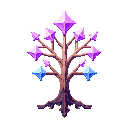
Древо перковPerk TreeКаждый босс кампании роняет книгу перка — одно очко древа (подбери тапом; не успела — очко всё равно засчитается), иногда с бонусным очком сверху. В 1-м акте очко даёт ещё и каждая новая глубина карты, плюс очки за Знаки мастерства, первую зачистку каждого тира Атласа в забеге и верные ответы на загадки. Ключевые узлы (💠) задают билд. Всего узлов: 112, из них ключевых — 37; чтобы купить древо целиком, нужно 539 очков, так что выбирать придётся.Every campaign boss drops a perk tome — one tree point (tap to grab it; miss it and the point still counts), sometimes with a bonus point on top. In act 1 every new map depth also grants a point, plus points from Mastery Marks, the first clear of each Atlas tier in a run and right answers to riddles. Key nodes (💠) define a build. Total nodes: 112, 37 of them keys; buying the whole tree takes 539 points, so you will have to choose.
🧭 Спицы, ставки и ключевые перкиSpokes, rates and key perks
Узлы древа растут по спицам. Ударная спица (удар и крит героини) и отрядная спица (урон, темп и крит отряда) копят вложенные очки: узел стоит N очков за ранг, и все они засчитываются в его спицу. Ключевые узлы открываются, только когда в их спице набрано нужное число очков: «Командир» — 6, «Единый вздох» — 12, «Вихрь клинков» — 12, «Неумолимый натиск» — 35, «Точка смерти» — 35, «Полководец» — 35, «Совершенство» — 70, «Единое сердце» — 70, «Тысяча клинков» — 100, «Кровавая луна» — 100.
Ранги просто складываются в общее ведро бонусов — без скрытых срезов и мягких потолков. Общие границы древа: шанс крита героини — не больше +35%, множитель крита — не больше +2.6, крит отряда — не больше +30%, золото — не больше +20%, таймер боссов — не больше +10 с (а из всех источников вместе — не больше +20 с).
Без перков отряд не критует. Крит отряда растёт только из отрядной спицы (и от нескольких героинь); крит героини начинается с базовых 5%.
⚑ Командир (ключевой узел отрядной спицы) включает Приказы: героиня продолжает бить в полную силу, а каждое касание арены командует отрядом.
Сброс. Одну ступень любого узла можно вернуть за 5 фильсов (если это не порвёт древо), всё древо — за 40 фильсов. Если ты играла до большого обновления баланса, древо при первом запуске вернуло все очки — распредели их заново бесплатно.
Tree nodes grow along spokes. The strike spoke (the heroine's strike and crit) and the squad spoke (squad damage, tempo and crit) count the points you invest: a node costs N points per rank, and all of them count toward its spoke. Key nodes unlock only once their spoke holds enough points: «Commander» — 6, «One Breath» — 12, «Whirling Blades» — 12, «Relentless Onslaught» — 35, «Killing Point» — 35, «Warlord» — 35, «Perfection» — 70, «One Heart» — 70, «Thousand Blades» — 100, «Blood Moon» — 100.
Ranks simply add up in the shared bonus bucket — no hidden cuts and no soft caps. Tree-wide limits: heroine crit chance at most +35%, crit multiplier at most +2.6, squad crit at most +30%, gold at most +20%, boss timer at most +10 s (and at most +20 s from all sources together).
Without perks the squad cannot crit. Squad crit comes only from the squad spoke (and a few heroines); the heroine's own crit starts at a base 5%.
⚑ Commander (a key node of the squad spoke) turns on Orders: the heroine keeps striking at full power, and every touch on the arena commands the squad.
Respec. One rank of any node can be refunded for 5 fils (if it doesn't split the tree), the whole tree for 40 fils. If you played before the big balance update, the tree refunded every point on first launch — spend them again for free.
🌟 Призвание — сердце древа🌟 The Calling — Heart of the Tree 3
В самом центре древа сидит не перк, а Призвание — путь героини. Пока он не выбран, центр — «Искра»: нажми на него и возьми одно из трёх. Призвание бесплатное и становится сердцем древа со своим именем и знаком. Ветки при этом остаются открыты ВСЕ — призвание задаёт уклон, а не запирает дорогу. Передумала? Долгое нажатие на центр меняет путь за 60 🔮 (короткое просто покажет описание — случайно потратить фильсы нельзя).At the very centre of the tree sits not a perk but a Calling — the heroine's path. Until you pick one, the centre is “Spark”: tap it and choose one of three. A Calling is free and becomes the heart of the tree with its own name and sign. Every branch stays open regardless — a Calling sets a leaning, not a cage. Changed your mind? A long press on the centre swaps your path for 60 🔮 (a short tap only shows the description, so you can't spend gems by accident).
⚔ Тап и крит⚔ Tap & Crit 29
⚑ Отряд и владыки⚑ Squad & Lords 24
💰 Экономика и удача💰 Economy & Luck 22
🔮 Магия и мана🔮 Magic & Mana 8
🛡 Защита и стойкость🛡 Defense & Resilience 3
🏠 Таверна и быт🏠 Tavern & Home 9
🎭 События мира🎭 World Events 13
🧭 Атлас🧭 Atlas 3
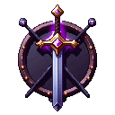
Механики бояCombat Mechanics🌪 СтихииElements
Шесть стихий по кольцу — каждая бьёт следующую ×1.3 и режется предыдущей ×0.85:
🔥 Огонь → ❄️ Лёд → 🌪️ Ветер → ⛰️ Земля → 🌌 Бездна → ✨ Свет → 🔥 Огонь
«Буря» считается Ветром. Стихию героине даёт оружие со свойством «созвучие стихий» (T2+); напарницы бьют своей стихией всегда, а заклинания ловят половину выгоды стихии. Кристалл над врагом со стрелкой ▼/▲ подсказывает выгоду. Перк «Родство стихий» и ⭐5 героини углубляют преимущество, кейстоун «Отражение стихий» убирает штраф. Владыка демонов сражается своими стойками вместо кольца (см. «Тактика на владык»).
Six elements on a ring — each beats the next ×1.3 and is resisted by the previous ×0.85:
🔥 Fire → ❄️ Frost → 🌪️ Wind → ⛰️ Earth → 🌌 Void → ✨ Holy → 🔥 Fire
“Storm” counts as Wind. The heroine gains an element from a weapon with the “elemental accord” property (T2+); companions always strike with their own element, and spells catch half of the elemental edge. The crystal above a foe with a ▼/▲ arrow shows the matchup. The “Elemental Kinship” perk and a heroine's ⭐5 deepen the advantage; the “Elemental Reflection” keystone removes the penalty. The Demon Lord fights with his own stances instead of the ring (see “Boss Tactics”).
⚙ Один путь уронаOne damage path
Удар героини, взмах напарницы, заклинание и периодический урон идут через один и тот же расчёт.
Удар = (Тренировка + Вдохновение) × (1 + все бонусы «к удару» и «ко всему») × крит × стихия × роли «по владыкам / по обычным» × ключевые перки × присутствие легенд × баффы.
Взмах напарницы = (её сила + Наставничество) × (1 + бонусы «к отряду» и «ко всему») × крит отряда × стихия × роли × ключевые перки × присутствие легенд × баффы × Приказы.
Все проценты из перков, снаряжения, сетов, ролей, Руники, синергий и уровня героини складываются в одно ведро — мягких потолков, сжатия силы и ограничений «за удар» нет. Убывание отдачи одно: +10% к ведру +300% значит меньше, чем к ведру +30%, и это честно видно в «Статистике».
Дальше — сторона врага: окна уязвимости, панцирь, сталь и шкура, щит фазы, стойка, купол и пол фазы. Урон в процентах от здоровья владыки не бывает: казни и жатвы работают по рядовым врагам.
A hero strike, a companion swing, a spell and damage over time all go through one and the same calculation.
Strike = (Training + Inspiration) × (1 + every “strike” and “all damage” bonus) × crit × element × “vs lords / vs regular” roles × key perks × legend presence × buffs.
Companion swing = (her power + Mentorship) × (1 + “squad” and “all damage” bonuses) × squad crit × element × roles × key perks × legend presence × buffs × Orders.
All percentages from perks, gear, sets, roles, Runika, synergies and the heroine's level pool into one bucket — no soft caps, no power compression, no per-hit limits. The only diminishing return: +10% on a +300% bucket means less than on a +30% one, and Statistics shows it honestly.
Then comes the enemy's side: vulnerability windows, armor, steel and hide, phase shields, stances, domes and the phase floor. There is no damage as a percentage of a lord's health: executes and reaps work on regular foes.
🎯 Криты и промахиCrits & Misses
Героиня критует с базовым шансом 5% (потолок 75%) и множителем ×1.5 (потолок ×6); шанс и множитель растут от перков, снаряжения, вех и ролей. Базовый промах — 10%; меткость с вещей, перков и вех уровня работает на 30% своей величины. Двойной удар бьёт вторым ударом на 60% и без крита.
Отряд промахивается с шансом 15% и не критует без перков отрядной спицы (и нескольких героинь); множитель крита отряда — ×1.5 плюс перки, шанс — не больше 80%. Все ускорители темпа отряда вместе — не больше ×3.
The heroine crits at a base 5% chance (cap 75%) with a ×1.5 multiplier (cap ×6); chance and multiplier grow from perks, gear, milestones and roles. Base miss is 10%; accuracy from gear, perks and level milestones works at 30% of its value. A double strike lands its second hit at 60% and never crits.
The squad misses 15% of the time and cannot crit without perks of the squad spoke (and a few heroines); the squad crit multiplier is ×1.5 plus perks, chance at most 80%. All squad tempo boosters together cap at ×3.
⚑ ПриказыOrders
Пока взят ключевой перк «Командир» (или в строю Лилит — у неё та же шкала, розовая, без перка), каждое касание арены за последнюю 1 с — это один приказ, до 30. Урон отряда растёт на 1.2% за приказ: ×1.08 при 7 касаниях в секунду, ×1.17 при 14 и ×1.36 при 30. С 10 приказов отряд ещё и бьёт на 10% чаще. Героиня при этом бьёт в полную силу — Приказы ничего у удара не отнимают.
Шкала ⚑ видна над отрядом. Лилит и «Командир» не складываются: если Лилит встаёт в строй, купленный «Командир» сам возвращает очки. У Лилит сверху «Чары»: при 15+ приказах враг получает +15% урона, а темп отряда +10%. Касаний засчитывается не больше 60 в секунду — защита от автокликера, без наказаний.
While you hold the “Commander” key perk (or Lilith is fielded — she brings the same gauge, pink, without the perk), every touch on the arena within the last 1 s is one order, up to 30. Squad damage rises 1.2% per order: ×1.08 at 7 touches a second, ×1.17 at 14 and ×1.36 at 30. From 10 orders the squad also attacks 10% faster. The heroine keeps striking at full power — Orders take nothing from the strike.
The ⚑ gauge shows above the squad. Lilith and the Commander don't stack: when Lilith joins the squad, a bought Commander refunds its points by itself. Lilith adds “Charm” on top: at 15+ orders the foe takes +15% damage, and squad tempo is +10%. At most 60 touches a second count — an anti-autoclicker guard with no penalty.
🍺 Отдых: «Отдохнувшая»Rest: “Rested”
Усталости в игре нет — героиня бьёт одинаково хоть тысячу ударов подряд. Очаг таверны теперь дарит бафф «Отдохнувшая»: +10% ко всему урону на 15 минут игры (таймер тает только в бою), цена — 1 «уровневое золото», откат 30 минут. С перком «Уют очага» бафф даёт +15%.
There is no fatigue — the heroine strikes just as hard a thousand blows in a row. The tavern hearth now grants the “Rested” buff: +10% to all damage for 15 minutes of play (the timer only runs in battle), costing 1 “level gold”, with a 30-minute cooldown. With the “Hearth Comfort” perk the buff gives +15%.
👑 Боссы, полы фаз и владыки мираBosses, Phase Floors & World Lords
Мини-босс закрывает каждую глубину, владыка врат — акт. Таймер: 30 с у мини-боссов, 60 с у владык врат, 75 с у Владыки демонов и 90 с у финала. Бонус ко времени из всех источников (перки, вещи, героини, пара «Мерзлота») — не больше +20 с; заморозить таймер Стазисом или Вечной Мерзлотой можно не дольше 20 с за бой. Новый враг выходит через 350 мс после гибели прежнего.
Полы фаз. Каждый порог механики владыки — пол: урон не опускает его ниже, пока механика не разрешилась (ростки сломаны, выбор сделан, окно щита прошло), и не раньше чем через 1.5 с; лишний урон пропадает. У владык врат к своим порогам добавляются стандартные 75/50/25% (у Владыки демонов и финала — 66/33/15%). Поэтому сила владыки — в механике и таймере, а не в капе удара: вдесятеро сильнее — значит быстрее, но окна фаз пройти всё равно придётся. У мини-босса один пол на 50% и одна из типовых фаз: щит (урон ×0.18), туман (на 5 с +30% промаха, а таймер босса бежит в 1.5 раза быстрее), стойка (бей в окно ×1.6 после парирования, удары в стойку лечат его) или замедление. Страж — мини-босс 5-й глубины — держит два пола (66% и 33%). С 9-го акта примерно каждый 5-й мини-босс «необычный»: он берёт одну мягкую механику уже пройденного владыки.
Владыки мира приходят по времени — раз в 4 минуты боя (перк «Тишь земель» реже). Таймера у них нет, здоровье — 1.2 мини-босса текущей глубины, а через 5 с боя он сам «истекает» на 2.5 с твоей силы каждые 5 с. Награда: кошель как с шести мини-боссов, 6 фильсов, 55% на снаряжение и свитки. Через 15 с его можно отпустить, но владыка обидится: −20% золота в этом акте, пока он не пройден, а после второго отказа подряд он перестаёт приходить.
A mini-boss closes every depth, a gate lord closes the act. Timers: 30 s for mini-bosses, 60 s for gate lords, 75 s for the Demon Lord and 90 s for the finale. Bonus time from all sources (perks, gear, heroines, the “Permafrost” pair) is capped at +20 s; Stasis or Eternal Frost can hold the timer for at most 20 s per fight. The next foe steps out 350 ms after the last one falls.
Phase floors. Every mechanic threshold of a lord is a floor: damage cannot push him lower until the mechanic resolves (roots broken, choice made, shield window over), and not sooner than 1.5 s; the excess damage is lost. Gate lords also get the standard 75/50/25% floors on top of their own (66/33/15% for the Demon Lord and the finale). So a lord's strength lies in his mechanic and timer, not in a per-hit cap: ten times stronger means faster, but the phase windows still have to be played. A mini-boss has one floor at 50% with one of the stock phases: shield (damage ×0.18), haze (for 5 s +30% miss, and the boss timer runs 1.5 times faster), guard (strike the ×1.6 opening after the parry; hits into the guard heal him) or slow. The Warden — the depth-5 mini-boss — holds two floors (66% and 33%). From act 9 on, roughly every 5th mini-boss is “unusual”: it borrows one gentle mechanic of a lord you have already beaten.
World lords come by time — once every 4 minutes of combat (less often with the “Quiet Lands” perk). They have no timer, their health is 1.2× the mini-boss of your current depth, and after 5 s of fighting they “bleed out” for 2.5 s of your power every 5 s. Reward: a purse worth six mini-bosses, 6 fils, a 55% gear chance and scrolls. After 15 s you may let him go, but he takes offence: −20% gold in that act until it is cleared, and after a second refusal in a row he stops coming.
⛓ Плен владыкиLord’s Captivity
На входе в новый акт (или на остров Атласа) владыка этих земель с шансом 15% наносит удар первым — похищает случайную напарницу из коллекции. Пленница снимается со всех постов (отряд, таверна, питомник) и не встаёт в строй, пока владыка жив. Новичков с 1–2 напарницами владыки не трогают, держат лишь одну пленницу и никогда не берут ту, без которой не собрать лесенку врат этого акта, и легендарку (SSR/SSSR) из твоего строя, если рядом с ней не бьётся другая легендарка (легендарка в клетке, во льду или в ростках за другую не считается). Освободить её можно ровно одним способом — одолеть того самого владыку.On entering a new act (or an Atlas isle) the lord of those lands strikes first with a 15% chance — kidnapping a random companion from your collection. The captive is pulled from every post (squad, tavern, nursery) and can't rejoin while the lord lives. Lords leave beginners with 1–2 companions alone, hold only one captive at a time and never take the heroine you need for that act's gate ladder, nor a legendary (SSR/SSSR) in your squad unless another legendary fights beside her (a caged, frozen or sprout-bound legendary doesn't count as another). There is exactly one way to free her — defeat that very lord.
В бою с владыкой врат пленница видна в его королевской клетке — она покачивается на цепи над ареной, за спиной хозяина. Клетку не разбить нажатием: единственный путь — одолеть самого владыку.In the gate lord’s battle the captive hangs in his royal cage — swaying on a chain above the arena, behind her captor. The cage cannot be tapped open: the only way is to defeat the lord himself.
Плен переживает перезапуск игры; перерождение рвёт любые цепи.Captivity survives a restart; a rebirth breaks any chains.
🌫 Ауры враговEnemy Auras
Часть врагов носит ауру — модификатор боя. Две ауры бывают только у рядовых: ⚙️ Стальной (25% рядовых без своей ауры; удар героини ×0.5) и 🐗 Шкура (15% рядовых с 4-го акта; урон отряда ×0.5). Против них помогают второй источник урона и «Пробой». Постройки владык в Рунике ослабляют «свою» ауру вполсилы.
Some foes carry an aura — a combat modifier. Two auras appear only on regular foes: ⚙️ Steel (25% of aura-less regulars; hero strike ×0.5) and 🐗 Hide (15% of regulars from act 4; squad damage ×0.5). A second damage source and “Pierce” help against them. Lord buildings in Runika halve “their” aura.
🎭 Особые встречиSpecial Encounters
🎭 Кукольник раз в акт (с шансом 60%) предлагает три сделки на выбор, у каждой своя цена: «Жертва куклы» — легендарное снаряжение ценой тяжёлого проклятия; «Долг золотом» — +40% полоски опыта, но золото акта вдвое меньше; «Пакт Пряжи» — связка крафт-свитков за −30% золота акта; «Печать Глубин» — Свиток Повелителя и Свиток Возвышения ценой немоты заклинаний на акт; «Тихий разум» — навсегда −50% маны, зато реген вдвое быстрее; «Переплавка» — всё надетое взамен на два эпика и проклятие; «Обмен душ» — −1 звезда у одной героини и +2 у другой; «Обет молчания» — очко древа ценой немоты на акт. Есть и мелкие: «Кроёная нить» (фиолетовая заготовка под твой акт за проклятие) и «Урок на нитях» (очко древа за тяжёлое проклятие). Пока проклятие висит, «проклятые» сделки не предлагаются.
🜏 Проклинатель, появившись, проклинает героиню: удар ×0.7 на 20 с. Знак 🜏 в полоске состояний снимается удержанием пальца 0.5 с. ⛓ Тюремщик запирает напарницу в клетку — удержи её портрет 1.5 с. 👺 Гоблин при появлении крадёт часть кошелька (не больше 10%); «Кошель на замке» лишает его добычи. 📦 Сундук — добрый моб: золото ×3. Ещё встречаются банши (+15% промаха, пока жива), порчельник (урон ×0.7, пока жив), пиявка (−20 маны при смерти), ловчий (короткая задержка) и позолоченный враг (+1 фильс). Особые враги живут один бой: их эффект гаснет с их смертью.
💎 Элита и мелочь. С 4-го этапа рядовой иногда выходит элитой (здоровье ×1.9, золото ×2.4) или мелочью (здоровье ×0.4, золото ×0.6).
🎭 The Puppeteer offers three bargains once per act (60% chance), each with its own price: “Doll's Sacrifice” — legendary gear for a heavy curse; “Gold Debt” — +40% of the XP bar, but the act's gold is halved; “Loom Pact” — a bundle of crafting scrolls for −30% of the act's gold; “Seal of the Deep” — an Overlord's Scroll and an Ascension Scroll at the cost of silenced spells for the act; “Quiet Mind” — −50% max mana forever, but regen twice as fast; “Reforge” — all equipped gear for two epics and a curse; “Soul Swap” — −1 star on one heroine and +2 on another; “Vow of Silence” — a tree point for a silenced act. Small ones too: “Cut Thread” (a purple blank for your act, for a curse) and “Lesson on Strings” (a tree point for a heavy curse). While a curse hangs on you, the “cursed” bargains are not offered.
🜏 The Curser curses the heroine as he appears: strike ×0.7 for 20 s. Hold a finger on the 🜏 sign in the status strip for 0.5 s to lift it. ⛓ The Jailer cages a companion — hold her portrait for 1.5 s. 👺 The Goblin steals part of your purse when he appears (at most 10%); “Locked Purse” leaves him empty-handed. 📦 The Chest is a friendly mob: gold ×3. You'll also meet the banshee (+15% miss while alive), the hexer (damage ×0.7 while alive), the leech (−20 mana on death), the trapper (a short hold-up) and the gilded foe (+1 fils). Special foes live for one fight: their effect ends with them.
💎 Elites and runts. From stage 4, a regular foe sometimes steps out as an elite (health ×1.9, gold ×2.4) or a runt (health ×0.4, gold ×0.6).
МагияMagic
Четыре ячейки заклинаний открываются при входе в акты 2 / 3 / 6 / 10 — отрядный билд их не теряет. Мана течёт сама: 0.8 в секунду плюс перки, вещи и героини; запас — 200 + 2 за каждый уровень героини, плюс бонусы «к мане». «Знаток маны» возвращает ману за криты (не чаще раза в 0.25 с), аура «Шипы» жжёт 4 маны в секунду, пока бьёшь.Four spell slots open as you enter acts 2 / 3 / 6 / 10 — a squad build never loses them. Mana flows by itself: 0.8 a second plus perks, gear and heroines; the pool is 200 + 2 per heroine level, plus “mana” bonuses. “Mana Sage” refunds mana on crits (at most once per 0.25 s), the Thorns aura burns 4 mana a second while you strike.
Урон заклинаний — это «секунды твоей силы». База — твой собственный урон в секунду без заклинаний за последние 8 с (но не меньше половины силы из «Статистики»), умноженный на силу заклинаний и стихию. Никаких процентов от здоровья врага и своих потолков: заклинание идёт через тот же путь урона, что и удар, и упирается в те же полы фаз. Стихийное колесо действует на заклинания вполовину: ×1.15 вместо ×1.3, ×0.925 вместо ×0.85. «Сила заклинаний» к тому же растягивает баффы — не больше чем в 1.5 раза. «Магия крови» (перк или «Кровавый Завет») удешевляет заклинания на 25% за каждый источник, но не дешевле половины, и вдвое ускоряет ману.Spell damage is “seconds of your power”. The base is your own damage per second without spells over the last 8 s (but no less than half the power in Statistics), multiplied by spell power and element. No percent-of-health damage and no caps of their own: a spell travels the same damage path as a strike and stops at the same phase floors. The element wheel applies to spells at half: ×1.15 instead of ×1.3, ×0.925 instead of ×0.85. “Spell power” also stretches buffs — at most 1.5 times. “Blood Magic” (the perk or the Blood Covenant) makes spells 25% cheaper per source, down to half price, and doubles mana flow.
Базовые заклинанияBase Spells
Фирменные заклинания легендарокLegendary Signature Spells работают, пока героиня в строюwork while the heroine is fielded
БестиарийBestiary
Полный музей нечисти Фантазма — 262 обитателей: 174 рядовых, 55 элит и 33 владык. В игре запись открывается САМОЙ ВСТРЕЧЕЙ — тварь достаточно увидеть на арене, добивать не обязательно: постройка «Бестиарий» в Рунике заведёт кодекс, каждая новая тварь приносит 10 фильсов. Здесь же — весь зверинец без секретов.The complete monster museum of the Phantasm — 262 denizens: 174 regulars, 55 elites and 33 lords. In game an entry unlocks on the ENCOUNTER itself — seeing the beast on the arena is enough, no kill required: the Bestiary building in Runika opens the codex, and every new beast pays 10 fils. Here the whole menagerie hides nothing.
🕷 Настройка «Без насекомых» (Настройки игры): убирает жуков, пауков и скорпионов из рядовых врагов и из мини-боссов — богомолы и владыки врат остаются. Пока галочка стоит, эти записи в кодексе не откроются: список не укорачивается, так что 100% бестиария придётся добивать с выключенной настройкой.🕷 The “No insects” setting (game Settings) removes beetles, spiders and scorpions from regular foes and from mini-bosses — mantises and gate lords stay. While it is on, those codex entries stay locked: the list is never shortened, so 100% completion requires turning the setting off.
Акт 1 · Изумрудная роща (и отражения в Акте 9 — Изнанке Сада)Act 1 · Emerald Grove (mirrored in Act 9 — the Underside) 12
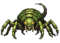
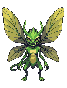
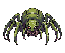
Акт 2 · Стылые пикиAct 2 · Frozen Peaks 13
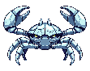
Акт 3 · Пепельная кальдераAct 3 · Ashen Caldera 10
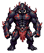
Акт 4 · Сумрачный лесAct 4 · Gloomwood 12
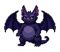
Акт 5 · Песчаное мореAct 5 · Sand Sea 12
Акт 6 · БезднаAct 6 · The Abyss 12
Акт 7 · Звёздная пустошьAct 7 · Astral Waste 12
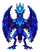
Акт 8 · Сад ВечностиAct 8 · Garden of Eternity 11
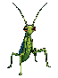
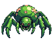
Акт 9 · Изнанка СадаAct 9 · Underside of the Garden 12
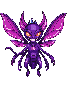
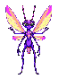
Акт 10 · Стеклянная БезднаAct 10 · Glass Abyss 12
Акт 11 · Пепел ЗвёздAct 11 · Ash of Stars 12
Акт 12 · Нити МирозданияAct 12 · Threads of Creation 12
Акт 13 · Престол ЗабвенияAct 13 · Throne of Oblivion 12
Акт 14 · Театр ИстинногоAct 14 · Theatre of the True One 12
👑 Мини-владыки восьми земельElites of the Eight Realms 45
Каждая земля растит пять пород элиты — с короной, аурой и злым нравом.Each realm breeds five strains of elite — crowned, aura-clad and mean.
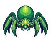
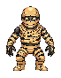
😈 Элита Царства МанипулятораElites of the Manipulator’s Realm 5
🌊 Глубины АтласаThe Atlas Deep 13
Фауна островов под влиянием Повелителя Глубин: рядовые твари пучины и её элита.The fauna of isles under the Overlord’s influence: trench regulars and their elite.
☠ ВладыкиLords 33
Владыки врат четырнадцати актов, хозяева подземелий и порождения Глубин.Gate lords of the fourteen acts, dungeon masters and spawn of the Deep.
владыка врат · акт 1gate lord · act 1
владыка врат · акт 2gate lord · act 2
владыка врат · акт 3gate lord · act 3
владыка врат · акт 4gate lord · act 4
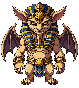
владыка врат · акт 5gate lord · act 5
владыка врат · акт 6gate lord · act 6
владыка врат · акт 7gate lord · act 7
владыка врат · акт 8 (в повторах акта)gate lord · act 8 (in act reruns)
владыка врат · акт 9gate lord · act 9
владыка врат · акт 10gate lord · act 10
владыка врат · акт 11gate lord · act 11
владыка врат · акт 12gate lord · act 12
владыка врат · акт 13gate lord · act 13
владыка врат · акт 14gate lord · act 14
врата Акта 8gate of Act 8
владыка подземелья · акт 1dungeon lord · act 1
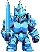
владыка подземелья · акт 2dungeon lord · act 2
владыка подземелья · акт 3dungeon lord · act 3
владыка подземелья · акт 4dungeon lord · act 4
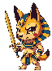
владыка подземелья · акт 5dungeon lord · act 5
владыка подземелья · акт 6dungeon lord · act 6
владыка подземелья · акт 7dungeon lord · act 7
владыка подземелья · акт 8dungeon lord · act 8
владыка подземелья · акт 9dungeon lord · act 9
владыка подземелья · акт 10dungeon lord · act 10
владыка подземелья · акт 11dungeon lord · act 11
владыка подземелья · акт 12dungeon lord · act 12
владыка подземелья · акт 13dungeon lord · act 13
владыка подземелья · акт 14dungeon lord · act 14
колосс АтласаAtlas colossus
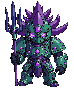
герольд ГлубинHerald of the Deep
герольд ГлубинHerald of the Deep
герольд ГлубинHerald of the Deep
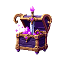
Предметы и крафтItems & CraftingЭкипировка падает только с боссов (база 5%, зона сокровищ, удача и «нюх на добычу» поднимают до 10%), владыки мира роняют её с шансом 55% — и падает она неопознанной: «реликвия молчит». Опознание в Кузнице стоит 0.2 «уровневого золота» и выковывает свойства: их число задаёт редкость, качество — тир, а общий размах — акт добычи. Удача лута двигает в основном редкость.Gear drops from bosses only (5% base; the treasure zone, luck and “loot scent” push it to 10%), world lords drop it 55% of the time — and it drops unidentified: “the relic is silent”. Identifying it at the Forge costs 0.2 “level gold” and shapes its properties: rarity sets how many, the tier sets their quality, and the act it dropped in sets their overall scale. Loot luck mostly raises rarity.
РедкостиRarities
Сила вещи: акт добычи и тирItem power: loot act and tier
Все свойства обычных вещей растут по одной кривой от акта, где вещь упала: 0.0569 × акт1.2. На островах Атласа акт добычи — 14 + тир/2. Поэтому вещь из 14-го акта примерно в 24 раз сильнее такой же из 1-го, а старая находка честно уступает новой.
Ядра урона — «к удару», «к отряду» и «весь урон» — крупнее прочих в 9 раз: три умно надетые вещи — заметная часть твоей силы. Каждая опознанная обычная вещь несёт хотя бы одно ядро урона своего слота (оружие — удар или весь урон, броня — отряд или весь урон, талисман — весь урон). Множитель крита на одно свойство — не больше +0.6.
Тир базы вещи зависит от акта: акты 1–4 — T4, 5–9 — T3, 10–13 — T2, 14 и Атлас — T1; с шансом 20/20 выпадает на тир выше или ниже. Свойства раскладываются «даунгрейд-роллами»: база T1 даёт T1/T2/T3 (25/50/25), T2 → T2/T3/T4, T3 → T3/T4 пополам, плюс ~12% на «шальное» свойство T4 на любой базе. Процентное свойство T4 с шансом 10% выпадает в минус (риск и награда). Свойства T2/T1 могут оказаться уникальными (18% / 32%, не больше одного на вещь).
Every property of an ordinary item grows on one curve from the act where it dropped: 0.0569 × act1.2. On Atlas isles the loot act is 14 + tier/2. So an act-14 item is roughly 24 times stronger than the same item from act 1, and an old find honestly yields to a new one.
Damage cores — “strike”, “squad” and “all damage” — are 9 times larger than the rest: three well-chosen items are a real share of your power. Every identified ordinary item carries at least one damage core of its slot (weapon — strike or all damage, armor — squad or all damage, trinket — all damage). The crit multiplier on one property is capped at +0.6.
The item's base tier depends on the act: acts 1–4 — T4, 5–9 — T3, 10–13 — T2, 14 and the Atlas — T1; at 20/20 odds it lands a tier higher or lower. Properties resolve through “downgrade rolls”: a T1 base yields T1/T2/T3 (25/50/25), T2 → T2/T3/T4, T3 → T3/T4 evenly, plus a ~12% chance of a “stray” T4 property on any base. A percent property at T4 rolls negative 10% of the time (risk and reward). T2/T1 properties may turn out unique (18% / 32%, at most one per item).
| Акт добычиLoot act | 11 | 33 | 55 | 77 | 99 | 1111 | 1414 | остров Tisle T |
|---|---|---|---|---|---|---|---|---|
| множительmultiplier | ×0.057 | ×0.213 | ×0.393 | ×0.588 | ×0.795 | ×1.011 | ×1.35 | акт 14 + T/2act 14 + T/2 |
Базовые свойстваBase Properties 24 свойства × 4 тира24 properties × 4 tiers
Разброс значений для типичной вещи трёх актов: 1-й акт и тир T4, 7-й и T3, 14-й и T1.Value ranges for a typical item of three acts: act 1 at T4, act 7 at T3, act 14 at T1.
| СвойствоProperty | Что даётEffect | СлотSlot | акт 1, T4act 1, T4 | акт 7, T3act 7, T3 | акт 14, T1act 14, T1 |
|---|---|---|---|---|---|
| Ярость клинкаBlade's fury | урон удараstrike damage | ⚔ оружие⚔ weapon | 2%–3.7%2%–3.7% | 26%–48%26%–48% | 91%–164%91%–164% |
| Поступь отрядаSquad's march | урон отрядаsquad damage | 🛡 броня🛡 armor | 2%–3.7%2%–3.7% | 26%–48%26%–48% | 91%–164%91%–164% |
| Печать мощиSeal of might | весь уронall damage | ✦ любой✦ any | 1.6%–2.9%1.6%–2.9% | 21%–37%21%–37% | 73%–128%73%–128% |
| Взор охотникаHunter's eye | шанс критаcrit chance | ✦ любой✦ any | 0.07%–0.16%0.07%–0.16% | 0.88%–2.1%0.88%–2.1% | 3%–7.1%3%–7.1% |
| Жажда кровиBloodthirst | к множителю критаcrit multiplier | ✦ любой✦ any | 0.01–0.030.01–0.03 | 0.15–0.350.15–0.35 | 0.51–0.60.51–0.6 |
| Эхо удараEcho of the strike | шанс двойного удараdouble-strike chance | ⚔ оружие⚔ weapon | 0.18%–0.41%0.18%–0.41% | 2.4%–5.3%2.4%–5.3% | 8.1%–18%8.1%–18% |
| Нарастающий вихрьRising gale | разгон за сериюstreak ramp | ⚔ оружие⚔ weapon | 0.05%–0.09%0.05%–0.09% | 0.59%–1.2%0.59%–1.2% | 2%–4.1%2%–4.1% |
| Созвучие стихийElemental accord | стихийное преимуществоelemental advantage | ⚔ оружие⚔ weapon | 0.18%–0.36%0.18%–0.36% | 2.4%–4.7%2.4%–4.7% | 8.1%–16%8.1%–16% |
| Верный глазTrue eye | меткостьaccuracy | ✦ любой✦ any | 0.09%–0.2%0.09%–0.2% | 1.2%–2.6%1.2%–2.6% | 4.1%–9.1%4.1%–9.1% |
| Добыча ловчегоHunter's bounty | золото с владыкboss gold | 🛡 броня🛡 armor | 0.27%–0.55%0.27%–0.55% | 3.5%–7.1%3.5%–7.1% | 12%–24%12%–24% |
| Мудрость странствийWanderer's wisdom | опытXP | 💍 талисман💍 trinket | 0.23%–0.46%0.23%–0.46% | 2.9%–5.9%2.9%–5.9% | 10%–20%10%–20% |
| Благосклонность судьбыFortune's favor | удача лутаloot luck | 💍 талисман💍 trinket | 0.23%–0.55%0.23%–0.55% | 2.9%–7.1%2.9%–7.1% | 10%–24%10%–24% |
| Зов светляковCall of fireflies | шанс светлячкаfirefly chance | 💍 талисман💍 trinket | 0.46%–1.1%0.46%–1.1% | 5.9%–15%5.9%–15% | 20%–51%20%–51% |
| Источник маныWellspring | запас маныmana pool | 🛡 броня🛡 armor | 0.36%–0.73%0.36%–0.73% | 4.7%–9.4%4.7%–9.4% | 16%–32%16%–32% |
| Запас душиSoul reserve | запас маныmana pool | 💍 талисман💍 trinket | 0.27%–0.59%0.27%–0.59% | 3.5%–7.6%3.5%–7.6% | 12%–26%12%–26% |
| Родник чарFont of magic | маны в секундуmana per second | 💍 талисман💍 trinket | 0.02–0.050.02–0.05 | 0.24–0.590.24–0.59 | 0.81–2.030.81–2.03 |
| Дар чародействаArcane gift | сила заклинанийspell power | 💍 талисман💍 trinket | 0.23%–0.46%0.23%–0.46% | 2.9%–5.9%2.9%–5.9% | 10%–20%10%–20% |
| Стойкость плотиHardy flesh | сопр. лечению врагаfoe-heal resist | 🛡 броня🛡 armor | 0.23%–0.55%0.23%–0.55% | 2.9%–7.1%2.9%–7.1% | 10%–24%10%–24% |
| Оберег от напастейWard against banes | сопр. напастямaffliction resist | 🛡 броня🛡 armor | 0.27%–0.64%0.27%–0.64% | 3.5%–8.2%3.5%–8.2% | 12%–28%12%–28% |
| Лёгкость шагаFleet step | сопр. замедлениюslow resist | 🛡 броня🛡 armor | 0.46%–0.91%0.46%–0.91% | 5.9%–12%5.9%–12% | 20%–41%20%–41% |
| ХладнокровиеCold blood | сопр. «Без крита»“No crit” resist | 🛡 броня🛡 armor | 0.46%–0.91%0.46%–0.91% | 5.9%–12%5.9%–12% | 20%–41%20%–41% |
| Разрубающий гневSundering wrath | пробой панциряarmor pierce | ⚔ оружие⚔ weapon | 0.46%–0.91%0.46%–0.91% | 5.9%–12%5.9%–12% | 20%–41%20%–41% |
| Нюх на добычуLoot scent | шанс найти снаряжение и свиткиchance to find gear and scrolls | 💍 талисман💍 trinket | 0.01%–0.01%0.01%–0.01% | 0.09%–0.18%0.09%–0.18% | 0.3%–0.61%0.3%–0.61% |
| Выдержка охотникаHunter's endurance | с к таймеру владыкs on the lord timer | 🛡 броня🛡 armor | 0.02–0.05 с0.02–0.05 s | 0.29–0.59 с0.29–0.59 s | 1.01–2.03 с1.01–2.03 s |
Уникальные свойстваUnique Properties только T2/T1 · числа для вещи 14-го актаT2/T1 only · numbers for an act-14 item
Главное число уникального свойства — в 1.3 раза крупнее обычного свойства того же акта и тира, остальные числа (в том числе плата минусом) идут в той же пропорции. Переключатели, казнь и жатва не масштабируются. На вещи другого акта всё множится по той же кривой.A unique property's main number is 1.3 times an ordinary property of the same act and tier; its other numbers (the minus “price” included) follow in proportion. Switches, execute and reap don't scale. On an item from another act everything rescales along the same curve.
Свойства ПовелителяOverlord Properties Свиток Повелителя / его влияние · числа для острова T10Overlord's Scroll / his influence · numbers for a T10 isle
Реликвии подземелийDungeon Relics розовые уникалки, по одной на подземелье · числа акта подземельяpink uniques, one per dungeon · numbers of the dungeon's act
Приз подземелья — опознанная розовая вещь: фирменное свойство и три обычных свойства тира своего акта. Свитки на розовые вещи не действуют.A dungeon's prize is an identified pink item: its signature property plus three ordinary properties at its act's tier. Scrolls don't work on pink items.
Розовые артефактыPink Artifacts с любого босса · числа для вещи 14-го актаfrom any boss · numbers for an act-14 item
12 розовых вещей со своим фирменным свойством (часто с платой: плюс за минус) и двумя обычными свойствами тира акта. Падают редко: 0.5% с мини-босса и 1.5% с владыки врат.12 pink items with a signature property of their own (often a trade-off: a plus for a minus) and two ordinary properties at their act's tier. They are rare: 0.5% from a mini-boss and 1.5% from a gate lord.
Свитки КузницыForge Scrolls
Перековка в Кузнице стоит 1 «уровневое золото». Удача и «нюх на добычу» слегка поднимают шанс свитков, но не выше 10%.Re-forging at the Forge costs 1 “level gold”. Luck and “loot scent” nudge scroll odds up a little, never past 10%.
ПечатиSeals эпические и легендарные вещи с 5-го акта: 12% / 18%epic and legendary items from act 5: 12% / 18%
Уроновые числа печатей и сетов растут с актом вещи по той же кривой: здесь они для вещи 7-го акта.Damage numbers of seals and sets grow with the item's act along the same curve: shown here for an act-7 item.
«Одеть лучшее»“Equip best”
Кнопка «Одеть лучшее» перебирает вещи по слотам и надевает набор, который сильнее всего поднимает твою силу в «Статистике» для текущего билда — с учётом сетов и твоего обычного темпа касаний. Редкость сама по себе ничего не решает: синяя вещь нового акта нередко лучше старой оранжевой. Запертого проклятого мимика кнопка не снимает — это делает только Кузница.
The “Equip best” button goes through the slots and puts on the set that raises your power in Statistics for your current build the most — counting sets and your usual tap pace. Rarity alone decides nothing: a blue item from a new act often beats an old orange one. It never pries off a locked cursed mimic — only the Forge does that.
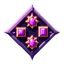
СетыSets2 части сета дают первый бонус, полный комплект из 3 — ещё и второй. Обычные сеты катятся на любой выпавшей вещи; легендарные — по одному на легендарку — падают, только пока их героиня стоит в отряде. Числа урона («к удару», «к отряду», «весь урон») ниже даны для вещей 7-го акта и растут со средним актом частей по той же кривой, что и свойства: на вещах 1-го акта — ×0.1, 14-го — ×2.3. Прочие числа от акта не зависят.2 set pieces grant the first bonus; the full 3 add the second on top. Common sets roll on any dropped item; legendary ones — one per legendary — drop only while their heroine is in the squad. Damage numbers (“strike”, “squad”, “all damage”) below are for act-7 items and grow with the pieces' average act along the same curve as properties: ×0.1 on act-1 items, ×2.3 on act-14 ones. Other numbers don't depend on the act.
Обычные сетыCommon Sets
3 части3 pieces: +1.2 к множителю крита · +6% весь урон+1.2 crit multiplier · +6% all damage
3 части3 pieces: +30% сопр. напастям · +10% весь урон+30% affliction resist · +10% all damage
3 части3 pieces: +18% урон удара · +5% шанс крита+18% strike damage · +5% crit chance
3 части3 pieces: +35% удача лута+35% loot luck
3 части3 pieces: +18% урон отряда · +6% весь урон+18% squad damage · +6% all damage
3 части3 pieces: +30% удача лута+30% loot luck
3 части3 pieces: +30% сопр. лечению врага · +12% урон отряда+30% foe-heal resist · +12% squad damage
3 части3 pieces: +8% шанс крита · +10% урон удара+8% crit chance · +10% strike damage
3 части3 pieces: +25% урон отряда · «Командир»: Приказы без перка+25% squad damage · Commander: Orders without the perkтолько на вещах тира T2 и лучшеonly on items of tier T2 or better
Легендарные сетыLegendary Sets
3 части3 pieces: +45% весь урон · +2.5 к множителю крита · +35% урон отряда · +35% урон удара+45% all damage · +2.5 crit multiplier · +35% squad damage · +35% strike damageтолько с проклятия: 5% с любого врага, пока Шанателла в отряде; бонус работает, пока она в строюonly from her curse: 5% from any foe while Shantelle is in the squad; the bonus works while she is fielded
3 части3 pieces: +35% меткость · +20% весь урон+35% accuracy · +20% all damageпадает, пока Святая Серафина в отрядеdrops while Saint Seraphina is in the squad
3 части3 pieces: +45% шанс крита · +25% урон удара+45% crit chance · +25% strike damageпадает, пока Громовая Аэлла в отрядеdrops while Thunder Aella is in the squad
3 части3 pieces: +4.5 к множителю крита · +15% весь урон+4.5 crit multiplier · +15% all damageпадает, пока Драконица Игнара в отрядеdrops while Dragoness Ignara is in the squad
3 части3 pieces: +20% шанс двойного удара · +35% урон удара+20% double-strike chance · +35% strike damageпадает, пока Клинок Луны Цубаки в отрядеdrops while Moonblade Tsubaki is in the squad
3 части3 pieces: +9% порог казни · +18% весь урон+9% execute threshold · +18% all damageпадает, пока Владычица Бездны Нокс в отрядеdrops while Abyss Lady Nox is in the squad
3 части3 pieces: +25% урон отряда · +20% весь урон+25% squad damage · +20% all damageпадает, пока Снежная Императрица Лисанна в отрядеdrops while Snow Empress Lisanna is in the squad
3 части3 pieces: +30% весь урон · +20% удача лута · +40% сопр. напастям+30% all damage · +20% loot luck · +40% affliction resistпадает, пока Хранительница Гайя в отрядеdrops while Guardian Gaia is in the squad
3 части3 pieces: +35% урон удара · +35% удача лута+35% strike damage · +35% loot luckпадает, пока Суккуба Лилит в отрядеdrops while Succubus Lilith is in the squad
3 части3 pieces: +30% урон отряда · +35% удача лута · +10% весь урон+30% squad damage · +35% loot luck · +10% all damageпадает, пока Владычица Озера Нимуэ в отрядеdrops while Lady of the Lake Nimue is in the squad
3 части3 pieces: +25% весь урон · +1.8 к множителю крита+25% all damage · +1.8 crit multiplierпадает, пока Колдунья Морриган в отрядеdrops while Witch Morrigan is in the squad
3 части3 pieces: +25% весь урон · +2 к множителю крита · +10% шанс крита+25% all damage · +2 crit multiplier · +10% crit chanceпадает, пока Звёздная Дева Астрея в отрядеdrops while Astral Maiden Astrea is in the squad
3 части3 pieces: +50% опыт · +30% удача лута+50% XP · +30% loot luckпадает, пока Хранительница Сада Верделия в отрядеdrops while Garden Warden Verdelia is in the squad
3 части3 pieces: +30% весь урон · +25% урон удара · +20% урон отряда+30% all damage · +25% strike damage · +20% squad damageпадает, пока Феникс Фейрин в отрядеdrops while Phoenix Feyrin is in the squad
3 части3 pieces: +40% удача лута · +15% весь урон+40% loot luck · +15% all damageпадает, пока Заря Аврора в отрядеdrops while Aurora the Dawn is in the squad
3 части3 pieces: +9% порог казни · +2.5 к множителю крита+9% execute threshold · +2.5 crit multiplierпадает, пока Жница Морана в отрядеdrops while Reaper Morana is in the squad
Морской АтласNaval Atlas
Эндгейм после финала кампании. Боссы в море роняют карты актов (тир T1–T16 + аффиксы); карта вставляется в Штурманский стол — из моря поднимается остров, героиня плывёт и зачищает. В море держится максимум 15 островов — старейший тонет.The endgame past the campaign finale. Sea bosses drop act maps (tier T1–T16 + affixes); slot a map into the Navigator's Table — an island rises from the sea; sail out and clear it. The sea holds at most 15 isles — the oldest sinks.
Тир — это половина акта: остров тира T стоит на той же кривой, что и кампания, как акт 14 + T/2 (T1 — акт 14.5, T16 — акт 22). Поэтому каждый тир — здоровье врагов ×3.16 и золото ×4.07, а снаряжение с острова растёт по своему акту. Фильсы и кримнит за зачистку — ×1.2 за тир (T16 ≈ ×15.4). Первая зачистка каждого тира в забеге даёт очко древа, а Знаки мастерства на островах — ещё +1 очко за 3000 убийств на тире. Тир-бэнды карт: 1–6 / 7–9 / 10–14 / 15–16 — Секстант Глубин поднимает тир только внутри бэнда, выше — ищи карту нового бэнда. Кап аффиксов растёт с тиром: 2 → 3 → 4 → 4. Карта всегда несёт хотя бы одно благо.
Карты T10+ могут нести влияние Повелителя Глубин: на таких островах падают предметы с его T1-свойствами. Каждые 5 зачисток всплывает его логово — колосс по формуле владыки острова ×1.5 по здоровью и ×3 по золоту, с жирной наградой (осколок Фантазма, Свиток Повелителя, его вещь и карта на два тира выше). Финал такого острова держит именной герольд Глубин — Глашатай Глубин, Пожирательница Флотов или Тень Пучины. Острова ОДНОРАЗОВЫЕ: зачистила — и он отработан, переиграть его нельзя. Карты добываются только со свежих островов, а на самый крайний случай есть страховка от тупика.
A tier is half an act: an isle of tier T sits on the same curve as the campaign, as act 14 + T/2 (T1 — act 14.5, T16 — act 22). So every tier means foe health ×3.16 and gold ×4.07, and isle gear grows by its own act. Fils and Krimnit per clear are ×1.2 per tier (T16 ≈ ×15.4). The first clear of each tier in a run grants a tree point, and Mastery Marks on isles add +1 point per 3000 kills on a tier. Map tier bands: 1–6 / 7–9 / 10–14 / 15–16 — the Sextant of the Deep raises tier only within a band; to go higher, find a map of the next band. The affix cap grows with tier: 2 → 3 → 4 → 4. A map always carries at least one boon.
T10+ maps may carry the influence of the Overlord of the Deep: such isles drop items bearing his T1 properties. Every 5 clears his lair surfaces — a colossus on the isle-lord formula ×1.5 in health and ×3 in gold, with a fat prize (a Phantasm shard, the Overlord's Scroll, one of his items and a chart two tiers higher). The finale of such an isle is held by a named Herald of the Deep — the Herald of the Deep, the Fleet Devourer or the Trench Shade. Isles are ONE-SHOT: clear one and it is spent — there is no replaying it. Charts come only from fresh isles, with the dead-end lifeline as the last resort.
Опасности картMap Perils
Блага картMap Boons
🏝 Архипелаги и репутацияArchipelagos & Standing
Море поделено на четыре архипелага — по тир-бэндам карт: Мелководье знамений (T1-6), Хмурые течения (T7-9), Впадина (T10-14) и Пасть Повелителя (T15-16). Карта всплывает в том секторе, куда тянет её тир — выбирать нельзя, и потому положение на карте само показывает, как далеко ты зашла.
У каждого архипелага своё море на 8 островов (всего 32). Старый остров тонет ТОЛЬКО внутри своего сектора: свежая T3 больше не топит недойденный T16. Сектор виден на вкладке, даже если ещё закрыт — это цель, а не пустое место.
Репутация архипелага копится за зачистку его островов: 3 / 8 / 15 / 25 / 40 зачисток дают уровни 1-5. Уровень улучшает карты, падающие ИМЕННО В ЭТОМ секторе: +1 тир за каждые два уровня и +9% за уровень на лишнее благое свойство. Это главная петля эндгейма: фармишь сектор — он сам начинает тебя кормить, и прогресс остаётся за морем, даже когда острова тонут.
На вкладке сразу видно всё нужное: имя сектора, сколько островов занято из 8, сколько ещё не зачищено (красная точка) и уровень репутации звёздами.
The sea is split into four archipelagos by map tier band: Shallows of Omens (T1-6), Sullen Currents (T7-9), The Trench (T10-14) and Maw of the Overlord (T15-16). A chart surfaces in the sector its tier pulls it to — you cannot choose, so your position on the chart itself shows how far you have come.
Each archipelago holds its own sea of 8 isles (32 in total). An old isle sinks ONLY within its own sector: a fresh T3 no longer drowns the T16 you never finished. A sector is visible on its tab even while locked — a goal, not a blank.
Archipelago standing builds from clearing its isles: 3 / 8 / 15 / 25 / 40 clears grant levels 1-5. The level improves charts dropping IN THAT sector: +1 tier per two levels and +9% per level for an extra boon. This is the endgame loop: farm a sector and it starts feeding you — and the progress stays with the sea even as isles sink.
Each tab shows what matters at a glance: the sector name, isles held out of 8, how many are still uncleared (the red dot) and standing as stars.
🌑 Влияние Повелителя ГлубинThe Overlord's Sway
Как остров попадает под влияние. Три пути, и все — с тира 10:
• Метка на заготовке. Владыка острова роняет уже отмеченную карту с шансом ~22%, рядовой треш — ~8%. Такую метку не снять ничем: ни Штилем, ни перековкой.
• Печать Глубин — очень редкий секстант (~1% с владыки). Кладёт метку вручную на любую чистую карту T10+.
• Случай при всплытии — карта T10+ без метки всё ещё может уйти Повелителю сама (монетка 60%).
Печати Глубин. Когда такой остров всплывает, на него ложатся 1–2 особые печати СВЕРХ обычного капа аффиксов. Они не роллятся на обычных картах и не выдаются секстантами: 🐙 Хватка глубин (+120% HP), 🌊 Давление бездны (урон нажатия −35%), 🔇 Немой зов (откат заклинаний +60%), 🌀 Мёртвый прилив (таймер владыки −30%). Печати закреплены за сидом карты — один и тот же остров всегда несёт одни и те же.
Что взамен. Падают предметы Повелителя, а зачистка двигает его заинтересованность (5 зачисток → всплывает логово). Свой бестиарий: удильщики, утопленницы, сирены, скаты и полипы вместо обычных мобов биома, а финал держит именной герольд. Такие острова носят свои, зловещие имена — Остров Бедствий, Погост Призраков, Утопленный Хор.
Видно заранее. На карте Атласа затонувший остров — свой спрайт в фиолетовом свечении; на экране земель карта тонет в бездне и несёт метку «Под влиянием Повелителя Глубин».
How an isle falls under the sway. Three routes, all from tier 10:
• A pre-marked chart. An isle lord drops an already-marked map at ~22%, ordinary trash at ~8%. That mark cannot be removed by anything — not Calm, not a re-roll.
• The Seal of the Deep — a very rare sextant (~1% from a lord). Applies the mark by hand to any unmarked T10+ map.
• Chance on surfacing — an unmarked T10+ map may still go to the Overlord on its own (a 60% coin flip).
Seals of the Deep. When such an isle rises, 1–2 special seals land on it ON TOP of the normal affix cap. They never roll on ordinary maps and no sextant grants them: 🐙 Deep Grip (+120% HP), 🌊 Abyssal Pressure (tap damage −35%), 🔇 Mute Call (spell cooldowns +60%), 🌀 Dead Tide (boss timer −30%). Seals are bound to the map's seed — the same isle always carries the same ones.
What you get back. The Overlord's items drop, and each clear advances his interest (5 clears → his lair surfaces). Its own bestiary: anglers, drowned, sirens, rays and polyps instead of the biome's usual foes, with a named Herald holding the finale. Such isles carry their own ominous names — Isle of Woe, Ghost Barrow, Drowned Choir.
Visible in advance. On the Atlas chart a drowned isle has its own sprite in a violet glow; on the lands screen its map sinks into the abyss and carries the tag "Under the Deep Overlord's sway".
🌊 Море и картыThe Sea & Charts
Море держит 15 островов и вечную бухту. Вставляешь 16-ю карту — тонет самый старый остров вместе со всем его прогрессом (кроме того, где стоит корабль или где идёт бой); теперь при этом приходит уведомление, что именно ушло на дно.
Дикий улов. Дрейф тира прежний (±2 от карты-источника), но с картой T4+ есть ~14% шанс, что море отдаст заготовку СИЛЬНО ниже — хоть T1. Низкие тиры остаются доступны в эндгейме.
Логово Повелителя. Когда заинтересованность доходит до 5/5, владыка СЛЕДУЮЩЕГО затонувшего острова роняет «Приглашение Повелителя» в 100% случаев, после чего счётчик обнуляется и копится заново. Логово всплывает в архипелаге «Пасть Повелителя» — рабочие сектора оно не занимает. Приглашения не копятся стопкой: пока прошлое логово не пройдено, новое не выдаётся, но заслуженное не сгорает — влияние копится дальше и отдаст его сразу, как только место освободится. Эта карта особая: секстанты её не берут вообще, а свойства у неё всегда одни и те же — 🌑 Пасть Повелителя (+200% HP), 👁 Взор из бездны (урон нажатия −25%), 🦑 Хватка исполина (таймер владыки −20%) и 💠 Сокровищница Глубин (золота ×3).
Страховка от тупика. Если трюм пуст И плыть некуда (все острова зачищены), прибой сам выносит к бухте карту T1–6. Ситуация редкая, но встать намертво невозможно.
The sea holds 15 isles and the everlasting bay. Slot in a 16th chart and the oldest isle sinks with all of its progress (except the one your ship sits on or where a fight is running); a notice now tells you exactly what went under.
Wild catch. Tier drift is unchanged (±2 from the source map), but from a T4+ chart there is a ~14% chance the sea yields something FAR lower — down to T1. Low tiers stay reachable in the endgame.
The Overlord’s lair. Once interest reaches 5/5, the lord of the NEXT drowned isle yields the Overlord’s Invitation at 100%, after which the counter resets and builds again. The lair surfaces in the Maw of the Overlord archipelago, so it never occupies your working sectors. Invitations do not stack: while the previous lair stands uncleared no new one is granted, yet nothing earned is lost — interest keeps building and pays out the moment room frees up. That chart is special: sextants cannot touch it at all, and its properties are always the same — 🌑 Maw of the Overlord (+200% HP), 👁 Gaze from the Abyss (tap damage −25%), 🦑 Titan's Grasp (boss timer −20%) and 💠 Hoard of the Deep (gold ×3).
Dead-end lifeline. If the hold is empty AND there is nowhere to sail (every isle cleared), the surf washes a T1–6 chart into the bay. It is a rare case, but a hard stall is impossible.
🧭 СекстантыSextants крафт карт, падают на островахmap crafting, drop on isles
 Секстант ХаосаSextant of ChaosЗаново перековывает ВСЕ аффиксы карты.Re-rolls ALL of a map's affixes.дроп: мини 6% · босс 10%drop: mini 6% · boss 10%
Секстант ХаосаSextant of ChaosЗаново перековывает ВСЕ аффиксы карты.Re-rolls ALL of a map's affixes.дроп: мини 6% · босс 10%drop: mini 6% · boss 10% Секстант ПриливаSextant of the TideДобавляет карте случайный аффикс (риск/награда).Adds a random affix (risk/reward).дроп: мини 5% · босс 8%drop: mini 5% · boss 8%
Секстант ПриливаSextant of the TideДобавляет карте случайный аффикс (риск/награда).Adds a random affix (risk/reward).дроп: мини 5% · босс 8%drop: mini 5% · boss 8% Секстант ШтиляSextant of CalmУбирает с карты одну ОПАСНОСТЬ (негативный аффикс).Removes one PERIL (negative affix).дроп: мини 4% · босс 6%drop: mini 4% · boss 6%
Секстант ШтиляSextant of CalmУбирает с карты одну ОПАСНОСТЬ (негативный аффикс).Removes one PERIL (negative affix).дроп: мини 4% · босс 6%drop: mini 4% · boss 6% Секстант ГлубинSextant of the DeepПовышает тир карты на 1 (сложнее, щедрее; +аффикс).Raises a map's tier by 1 (+affix).дроп: мини 1.5% · босс 3%drop: mini 1.5% · boss 3%
Секстант ГлубинSextant of the DeepПовышает тир карты на 1 (сложнее, щедрее; +аффикс).Raises a map's tier by 1 (+affix).дроп: мини 1.5% · босс 3%drop: mini 1.5% · boss 3%РуникаRunika
Руника — изометрический градострой и «панель управления» всей игрой: функции открываются не глубиной похода, а ПОСТРОЙКАМИ. Героиня строит Таверну — появляется вкладка таверны, Причал дирижабля — на карте открываются подземелья, и так далее. Территория растёт с каждым пройденным актом; на севере — стена, которую надо оборонять.Runika is an isometric city-builder and the game's control panel: features unlock through BUILDINGS, not journey depth. Build the Tavern and its tab appears; build the Airship Dock and dungeons open on the map, and so on. The plot grows with each act cleared; a wall to the north must be defended.
Стройка: тапни карточку внизу и выбери клетку — прицел, тапни ещё раз — строится (идёт время, можно ускорить фильсами): декор ставится мгновенно, главные/открывающие постройки ~1 минуту, крупные украшения-филлеры 30–60 минут; цена мгновенного ускорения растёт с длительностью (5 мин → 5, 30 мин → 30, 1 ч → 50, 2 ч → 70 фильсов). Особо крупные здания многофазны (⚒×N): фундамент → этажи → крыша. Долгий тап по зданию — перенести или убрать на склад (со склада ставится бесплатно; базовые постройки и домики только переносятся). Долгий тап по земле кладёт дорогу. Уникальные здания — лимит 1/1. Про цены: у 3 построек (Таверна, Кузница, Бестиарий) цена фиксированная (🪙100–200), а у остальных она записана как «N×ур.золота» — это уровневое золото, честная единица прогресса: золото примерно 150 убийств на твоей лучшей глубине (в Атласе — ещё и с поправкой на тир). Примерно столько стоит один уровень Тренировки и около минуты фарма на передовой. Поэтому дом стоит тем дороже, чем дальше зашла героиня, а не «20 000 золотом» раз и навсегда. Перк «Смета» сбивает золотую цену (фильсовые постройки перками не дешевеют).
Building: tap a card below and pick a cell to aim, tap again to build (it takes time; rush with fils): decor is placed instantly, core/unlock buildings ~1 minute, large filler decorations 30–60 minutes; the instant-rush price grows with the duration (5 min → 5, 30 min → 30, 1 h → 50, 2 h → 70 fils). The largest buildings are multi-phase (⚒×N): foundation → floors → roof. Long-press a building to move it or send it to storage (free to re-place from storage; core buildings and homes can only be moved). Long-press the ground for a road. Unique buildings are capped 1/1. About prices: 3 buildings (Tavern, Forge, Bestiary Hall) have a fixed price (🪙100–200); the rest are written as “N×level-gold” — level-gold is the game's honest unit of progress: the gold of about 150 kills at your best depth (in the Atlas, adjusted for the tier too). That is roughly one Training level, or about a minute of farming at the front. So a building costs more the further the heroine has gone, rather than a flat “20,000 gold” forever. The Blueprint perk cuts the gold price (fil-priced buildings are never discounted by perks).
🏛 Главные постройкиCore Buildings открывают вкладки и режимыunlock tabs & modes
Строится БЕСПЛАТНО и всего за минуту — открывается после финала кампании. Без неё в Морской Атлас не выплыть.Built for FREE in just one minute — unlocked after the campaign finale. Without it there is no sailing the Naval Atlas.
🌾 ФермыFarms «уровневое золото» раз в 30 минут“level-gold” every 30 minutes
🏆 Постройки за актыAct Buildings после владык врат — трофеи и боевые баффыafter gate lords — trophies & combat buffs
🌸 ДекорDecor
🌸 Тематический декорThemed Decor по 5 украшений на каждый актfive ornaments per act
Кроме восьми общих украшений выше, у каждого акта есть свой набор из пяти: прошёл землю — можешь принести её частичку домой. Декор ставится мгновенно и без стройки, а со склада возвращается бесплатно. Цена почти у всех — в «уровневом золоте», поэтому украшать город выгоднее раньше, чем позже.Beyond the eight general ornaments above, every act has its own set of five: walk a land and you can bring a piece of it home. Decor is placed instantly, with no build time, and returns from storage for free. Almost every price is in “level-gold”, so decorating early costs less than decorating late.
Показать все 70 украшенийShow all 70 ornaments
| УкрашениеOrnament | Что этоWhat it is | ЦенаPrice | Размер и лимитSize & cap |
|---|---|---|---|
| 01 · Изумрудная рощаEmerald Grove | |||
| СкамейкаBench | Дубовая скамейка рощи.An oak grove bench. | 🪙1×ур.золотаlevel-gold | 1×1 · до 12 шт.up to 12 |
| КлумбаFlowerbed | Кольцо камней с полевыми цветами.A stone ring of wildflowers. | 🪙1×ур.золотаlevel-gold | 1×1 · до 16 шт.up to 16 |
| Изумрудный кустEmerald Bush | Куст рощи со светляками.A grove bush with fireflies. | 🪙1×ур.золотаlevel-gold | 1×1 · до 20 шт.up to 20 |
| Замшелый валунMossy Boulder | Камень в мягком мху.A stone in soft moss. | 🪙1×ур.золотаlevel-gold | 1×1 · до 12 шт.up to 12 |
| Птичья купельBird Bath | Каменная чаша для пташек рощи.A stone basin for grove birds. | 🪙1×ур.золотаlevel-gold | 1×1 · до 8 шт.up to 8 |
| 02 · Стылые пикиFrozen Peaks | |||
| Льдинка ПиковPeak Shard | Вечный лёд Стылых пиков.Everice of the Frigid Peaks. | 🪙1×ур.золотаlevel-gold | 1×1 · до 10 шт.up to 10 |
| Снежная ельSnow Fir | Ель в снежной шубе.A fir in a snowy coat. | 🪙1×ур.золотаlevel-gold | 1×1 · до 14 шт.up to 14 |
| Ледяное зеркальцеFrozen Mirror | Замёрзший гладкий прудик.A frozen mirror-smooth pond. | 🪙2×ур.золотаlevel-gold | 2×2 · до 5 шт.up to 5 |
| СнеговикSnowman | Весёлый страж морозных пиков.A jolly frost-peak warden. | 🪙1×ур.золотаlevel-gold | 1×1 · до 8 шт.up to 8 |
| Ледяная аркаIce Arch | Арка из вечного льда.An arch of everice. | 🪙2×ур.золотаlevel-gold | 1×1 · до 4 шт.up to 4 |
| 03 · Пепельная кальдераAshen Caldera | |||
| КостровищеCampfire | Живой огонь кальдеры.Living caldera fire. | 🪙2×ур.золотаlevel-gold | 1×1 · до 8 шт.up to 8 |
| Обсидиановый клыкObsidian Fang | Чёрное стекло с тлеющими жилами.Black glass with smouldering veins. | 🪙2×ур.золотаlevel-gold | 1×1 · до 8 шт.up to 8 |
| Пепельное знамяAsh Banner | Опалённый стяг похода в Кальдеру.A scorched Caldera banner. | 🪙2×ур.золотаlevel-gold | 1×1 · до 8 шт.up to 8 |
| Лавовая лужицаLava Pool | Тёплое озерцо расплавленного камня.A warm pool of molten rock. | 🪙2×ур.золотаlevel-gold | 2×2 · до 4 шт.up to 4 |
| Жаровня бесовImp Brazier | Чаша огня на когтистой ноге.A fire bowl on a clawed leg. | 🪙2×ур.золотаlevel-gold | 1×1 · до 8 шт.up to 8 |
| 04 · Сумрачный лесGloomwood | |||
| Гриб-светлякGlowshroom | Светящийся гриб Сумрачного леса.A glowing Dusk Forest mushroom. | 🪙2×ур.золотаlevel-gold | 1×1 · до 12 шт.up to 12 |
| Теневой тотемShadow Totem | Резной страж чащи с рунами.A carved thicket warden. | 🪙2×ур.золотаlevel-gold | 1×1 · до 6 шт.up to 6 |
| Куст сумрачных ягодDuskberry Bush | Тёмные ягоды, светящиеся в сумерках.Dark berries that glow at dusk. | 🪙2×ур.золотаlevel-gold | 1×1 · до 14 шт.up to 14 |
| Лиловый фонарьViolet Lantern | Фонарь на теневом масле.A lantern on shadow oil. | 🪙2×ур.золотаlevel-gold | 1×1 · до 10 шт.up to 10 |
| Паучий стягWeb Banner | Знамя, сотканное пауками чащи.A banner spun by thicket spiders. | 🪙2×ур.золотаlevel-gold | 1×1 · до 8 шт.up to 8 |
| 05 · Песчаное мореSand Sea | |||
| КактусCactus | Колючий житель дюн с алым цветком.A prickly dune dweller with a scarlet bloom. | 🪙2×ур.золотаlevel-gold | 1×1 · до 10 шт.up to 10 |
| Песчаный валунDune Boulder | Выветренный камень древних дюн.A wind-worn dune stone. | 🪙2×ур.золотаlevel-gold | 1×1 · до 10 шт.up to 10 |
| Лампа миражейMirage Lamp | Золотая лампа в знойном мареве.A golden lamp in heat haze. | 🪙3×ур.золотаlevel-gold | 1×1 · до 8 шт.up to 8 |
| Обломок стражаWarden Shard | Осколок древнего каменного стража.A shard of an ancient stone warden. | 🪙3×ур.золотаlevel-gold | 1×1 · до 6 шт.up to 6 |
| Пальма оазисаOasis Palm | Зелёное чудо среди песков.A green miracle amid the sands. | 🪙3×ур.золотаlevel-gold | 1×1 · до 10 шт.up to 10 |
| 06 · БезднаThe Abyss | |||
| Бездновый цветокAbyss Bloom | Цветок, распустившийся во тьме.A flower that bloomed in the dark. | 🪙3×ур.золотаlevel-gold | 1×1 · до 10 шт.up to 10 |
| Око бездныAbyss Eye | Багровое озерцо смотрит в ответ.A crimson pool stares back. | 🪙3×ур.золотаlevel-gold | 1×1 · до 4 шт.up to 4 |
| Клык древнего злаElder Fang | Кристалл, тёмный изнутри.A crystal dark within. | 🪙3×ур.золотаlevel-gold | 1×1 · до 6 шт.up to 6 |
| Алтарь тенейShadow Altar | Малый алтарь культа Бездны.A lesser Abyss cult altar. | 🪙3×ур.золотаlevel-gold | 1×1 · до 4 шт.up to 4 |
| Знамя бездныAbyss Banner | Багровый стяг падших глубин.A crimson banner of fallen depths. | 🪙3×ур.золотаlevel-gold | 1×1 · до 8 шт.up to 8 |
| 07 · Звёздная пустошьAstral Waste | |||
| Звёздный осколокStar Shard | Осколок умершей звезды, ещё тёплый.A dead star's shard, still warm. | 🪙3×ур.золотаlevel-gold | 1×1 · до 8 шт.up to 8 |
| Лунный каменьMoonstone | Стела из холодного лунного камня.A stele of cold moonstone. | 🪙3×ур.золотаlevel-gold | 1×1 · до 6 шт.up to 6 |
| Звёздный фонарьStar Lantern | В стекле дремлет пойманная звезда.A caught star sleeps in glass. | 🪙3×ур.золотаlevel-gold | 1×1 · до 10 шт.up to 10 |
| МетеоритMeteorite | Гость из пустоши, ещё дымится.A wasteland guest, still smoking. | 🪙3×ур.золотаlevel-gold | 1×1 · до 8 шт.up to 8 |
| Столп созвездийConstellation Post | Стяг с картой мёртвых созвездий.A banner charting dead constellations. | 🪙3×ур.золотаlevel-gold | 1×1 · до 8 шт.up to 8 |
| 08 · Сад ВечностиGarden of Eternity | |||
| ВечноцветEverbloom | Клумба Сада, цветущая вечно.A Garden bed that blooms forever. | 🪙3×ур.золотаlevel-gold | 1×1 · до 12 шт.up to 12 |
| Древо-малышSapling of Eternity | Росток великого Древа Сада.A sprout of the great Garden Tree. | 🪙3×ур.золотаlevel-gold | 1×1 · до 8 шт.up to 8 |
| Родник вечностиEternal Spring | Вода, в которой не тонет время.Water where time cannot drown. | 🪙4×ур.золотаlevel-gold | 2×2 · до 4 шт.up to 4 |
| Изумрудная аркаEmerald Arch | Врата в глубину Сада.A gate into the Garden's depth. | 🪙4×ур.золотаlevel-gold | 1×1 · до 4 шт.up to 4 |
| Хранитель садаGarden Keeper | Статуя девы с лейкой.A maiden statue with a watering can. | 🪙4×ур.золотаlevel-gold | 1×1 · до 6 шт.up to 6 |
| 09 · Изнанка СадаUnderside of the Garden | |||
| Нить марионеткиPuppet Thread | Порванная нить с изнанки мира.A torn thread from the world's seam. | 🪙4×ур.золотаlevel-gold | 1×1 · до 8 шт.up to 8 |
| Сорванная маскаFallen Mask | Маска, снятая с декораций мира.A mask torn from the world's stage. | 🪙4×ур.золотаlevel-gold | 1×1 · до 6 шт.up to 6 |
| КулисаSide Curtain | Обрывок занавеса Изнанки.A scrap of the Seam's curtain. | 🪙4×ур.золотаlevel-gold | 1×1 · до 6 шт.up to 6 |
| Изнаночный кустSeam Bush | Куст, сшитый из лоскутов листвы.A bush stitched from leaf patches. | 🪙4×ур.золотаlevel-gold | 1×1 · до 12 шт.up to 12 |
| Лампа-обманкаTrick Lamp | Светит туда, куда не смотришь.Shines where no one is looking. | 🪙4×ур.золотаlevel-gold | 1×1 · до 8 шт.up to 8 |
| 10 · Стеклянная БезднаGlass Abyss | |||
| Зеркальный осколокMirror Shard | Осколок Стеклянной Бездны.A shard of the Glass Abyss. | 🪙4×ур.золотаlevel-gold | 1×1 · до 8 шт.up to 8 |
| Стеклянный прудGlass Pond | Вода, застывшая в стекло.Water frozen into glass. | 🪙4×ур.золотаlevel-gold | 2×2 · до 4 шт.up to 4 |
| Хрустальная аркаCrystal Arch | Арка, звенящая на ветру.An arch that chimes in the wind. | 🪙4×ур.золотаlevel-gold | 1×1 · до 4 шт.up to 4 |
| ПризмаPrism | Столп, дробящий свет на радуги.A pillar splitting light into rainbows. | 🪙4×ур.золотаlevel-gold | 1×1 · до 6 шт.up to 6 |
| Стеклянный стражGlass Warden | Прозрачная дева с клинком света.A translucent maiden with a light blade. | 🪙4×ур.золотаlevel-gold | 1×1 · до 6 шт.up to 6 |
| 11 · Пепел ЗвёздAsh of Stars | |||
| Погасшая звездаDead Star | Сердце светила, остывшее навек.A star's heart, cooled forever. | 🪙4×ур.золотаlevel-gold | 1×1 · до 6 шт.up to 6 |
| Пепельный самородокAsh Nugget | Золото, рождённое в звёздном пепле.Gold born in stellar ash. | 🪙4×ур.золотаlevel-gold | 1×1 · до 10 шт.up to 10 |
| Реликварий светаLight Reliquary | Хранит последний луч светила.Keeps a star's last ray. | 🪙5×ур.золотаlevel-gold | 1×1 · до 4 шт.up to 4 |
| Уголёк светилаStar Ember | Тёплый уголёк погасшей звезды.A warm ember of a dead star. | 🪙4×ур.золотаlevel-gold | 1×1 · до 8 шт.up to 8 |
| Знамя звёздного пеплаStarfall Banner | Стяг похода по кладбищу светил.A banner of the starfield march. | 🪙4×ур.золотаlevel-gold | 1×1 · до 8 шт.up to 8 |
| 12 · Нити МирозданияThreads of Creation | |||
| Клубок нитейThread Ball | Клубок чужих судеб.A ball of others' fates. | 🪙5×ур.золотаlevel-gold | 1×1 · до 10 шт.up to 10 |
| Веретено судьбыFate Spindle | Прядёт нити мироздания.Spins the threads of creation. | 🪙5×ур.золотаlevel-gold | 1×1 · до 6 шт.up to 6 |
| Ткацкий стан сновDream Loom | Ткёт полотно из чужих снов.Weaves cloth from others' dreams. | 🪙5×ур.золотаlevel-gold | 1×1 · до 4 шт.up to 4 |
| Нить-фонарьThread Lantern | Светящаяся нить в стеклянной капле.A glowing thread in a glass drop. | 🪙5×ур.золотаlevel-gold | 1×1 · до 8 шт.up to 8 |
| Узел мирозданияWorld Knot | Кристалл, где сходятся все нити.A crystal where all threads meet. | 🪙5×ур.золотаlevel-gold | 1×1 · до 6 шт.up to 6 |
| 13 · Престол ЗабвенияThrone of Oblivion | |||
| Забытый тронForgotten Throne | Трон, чьего владыку стёрли.A throne whose lord was erased. | 🪙5×ур.золотаlevel-gold | 1×1 · до 4 шт.up to 4 |
| Стёртая стелаErased Stele | Имена на ней не задерживаются.Names refuse to stay on it. | 🪙5×ур.золотаlevel-gold | 1×1 · до 6 шт.up to 6 |
| Свеча памятиMemory Candle | Горит по тем, кого забыли.Burns for the forgotten. | 🪙5×ур.золотаlevel-gold | 1×1 · до 10 шт.up to 10 |
| Вуаль забвенияOblivion Veil | Полупрозрачный стяг Престола.A translucent Throne banner. | 🪙5×ур.золотаlevel-gold | 1×1 · до 8 шт.up to 8 |
| Осколок имениName Shard | Кристалл с получитаемой надписью.A crystal with a half-read name. | 🪙5×ур.золотаlevel-gold | 1×1 · до 6 шт.up to 6 |
| 14 · Театр ИстинногоTheatre of the True One | |||
| Маска ТеатраTheatre Mask | Улыбка и плач финальной сцены.The final stage's smile and cry. | 🪙5×ур.золотаlevel-gold | 1×1 · до 6 шт.up to 6 |
| Алый занавесScarlet Curtain | Кусок занавеса Театра Истинного.A piece of the True Theatre's curtain. | 🪙5×ур.золотаlevel-gold | 1×1 · до 4 шт.up to 4 |
| СофитSpotlight | Луч, что ищет главного героя.A beam seeking the protagonist. | 🪙5×ур.золотаlevel-gold | 1×1 · до 8 шт.up to 8 |
| Афиша финалаFinale Poster | «Сегодня и навсегда: ФИНАЛ».“Tonight and forever: THE FINALE”. | 🪙5×ур.золотаlevel-gold | 1×1 · до 8 шт.up to 8 |
| Роза МанипулятораManipulator's Rose | Алая роза с последнего поклона.A scarlet rose from the last bow. | 🪙5×ур.золотаlevel-gold | 1×1 · до 10 шт.up to 10 |
🏠 Домики легендарокLegendary Homes
Выбил SSR или выше — в каталоге появляется её личный домик. Домик и еда — только бонусы, без штрафов: построен домик — «Дом», +5% к её урону; накормлена — «Сыта», ещё +10% на 3 часа игры. Бездомная и голодная легендарка бьётся в полную силу своей полосы — просто без этих прибавок. Цены домиков фиксированные и с прогрессом не растут. Обычные героини бродят по городу, легендарки держатся у своего домика. Налога на содержание и «утренней мигрени» больше нет.
Pull an SSR or higher and her personal home appears in the catalog. A home and food are bonuses only, never penalties: a built home grants “Home”, +5% to her damage; feeding her grants “Fed”, another +10% for 3 hours of play. A homeless, hungry legendary fights at the full strength of her band — just without these extras. Home prices are fixed and don't grow with progress. Common heroines wander the town; legendaries stay near their home. There is no upkeep tax and no “morning migraine” any more.
🧱 Северная стена и осадыNorth Wall & Sieges
За северной стеной бродят монстры. Осада не стихает (после первого акта): волны монстров то и дело идут на приступ и грызут стену — тапай по ним, а гуляющие героини помогают отгонять. Если стена падёт — прорыв: монстры поджигают второстепенные здания, те временно теряют функции; туши пожары тапами и чини стену за золото. Основные (функциональные) постройки не горят.
Monsters roam beyond the north wall. The siege never rests (after act 1): waves keep assaulting and gnawing at the wall — tap them, and wandering heroines help drive them off. If the wall falls it's a breach: monsters set secondary buildings on fire and they lose function until the flames are tapped out and the wall repaired for gold. Core (functional) buildings don't burn.
⚔ ПодземельяDungeons 14, по одному на акт (нужен Причал дирижабля)14, one per act (needs the Airship Dock)
Одноразовые дуэли с уникальным владыкой на 50 с. На 75%, 50% и 25% здоровья бой упирается в пол фазы: поднимается купол и меняется аура. У каждого владыки подземелья своя именная механика — подробно она расписана в «Тактике на владык»; провал механики возвращает ему +25% здоровья, а не исцеляет целиком. Награда — розовая реликвия с безаналоговым свойством. После Отката подземелья запечатываются заново.One-time 50-second duels against a unique lord. At 75%, 50% and 25% health the fight hits a phase floor: a dome rises and the aura shifts. Every dungeon lord has his own signature mechanic — detailed in “Boss Tactics”; failing it gives him back +25% of his health rather than a full heal. The prize is a pink relic with a property found nowhere else. After a Rewind the dungeons re-seal.
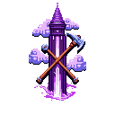
Прочие режимыOther Modes открываются постройкамиunlocked by buildingsРазвитиеProgression
🏅 Знаки мастерстваMastery Marks
Пока ты бьёшься в акте — на пути, у стены мини-босса или у врат, — каждое убийство идёт в счёт Знаков мастерства этого акта. Ступени: 800 / 2400 / 4800 убийств, награды — +1 очко древа, +100 фильсов, +1 очко древа. Так у стены растёт не только золото: каждый час фарма приносит и очки древа. Счётчик виден под узлом врат и на табличке акта.
На островах Атласа своя ступень: +1 очко древа за 3000 убийств на каждом тире. Побочные режимы (Копи, Башня, Эхо, подземелья) в счёт не идут. Откат обнуляет Знаки вместе с древом — в новом забеге их можно собрать заново.
While you fight in an act — on the road, at a mini-boss wall or at the gate — every kill counts toward that act's Mastery Marks. Steps: 800 / 2400 / 4800 kills, rewards — +1 tree point, +100 fils, +1 tree point. So at a wall more than gold grows: every hour of farming also brings tree points. The counter shows under the gate node and on the act plaque.
Atlas isles have their own step: +1 tree point per 3000 kills on each tier. Side modes (Mines, Tower, Echo, dungeons) don't count. The Rewind clears the Marks together with the tree — a new run earns them again.
⏳ Таймеры владыкLord Timers
Мини-босс глубины: 30 с на всех актах. Владыка врат: 60 с. Владыка демонов (врата 8-го акта): 75 с. Финал (врата 14-го акта): 90 с. Владыка подземелья: 50 с. Владыки мира таймера не имеют.
Прибавка ко времени из всех источников вместе (перки, вещи, Лисанна, пара «Мерзлота») — не больше +20 с; Стазис и Вечная Мерзлота замораживают таймер не дольше 20 с за бой. Таймер никогда не короче 12 с, даже под аффиксами карт Атласа.
A depth mini-boss: 30 s on every act. A gate lord: 60 s. The Demon Lord (act 8 gate): 75 s. The finale (act 14 gate): 90 s. A dungeon lord: 50 s. World lords have no timer.
Bonus time from all sources together (perks, gear, Lisanna, the Permafrost pair) is capped at +20 s; Stasis and Permafrost freeze the timer for at most 20 s per fight. A timer is never shorter than 12 s, even under Atlas map affixes.
🎰 Призыв (гача)The Summon (gacha)
Крутка — 100 фильсов, десяток — 900. Базовый шанс SSR — 0.6%, SR — 4.3%. С 55-й крутки без легендарки шанс SSR растёт на 6% за крутку, на 68-й — гарант. Не выпала избранная SSR баннера — следующая точно избранная (50/50 → гарант). Каждая 10-я крутка — минимум SR, и такой гарант всегда приносит героиню, сперва невладенную. Обычные выпадения R и SR чаще приходят снаряжением (80%; пока SR-героинь меньше четырёх — реже). 3-я крутка сейва гарантирует синюю героиню.
Мифический призыв (SSSR) — за 500 кримнита, из тройки мификов; повтор мифика зажигает ей звезду, а после ⭐5 возвращает половину кримнита.
A pull costs 100 fils, ten cost 900. The base SSR rate is 0.6%, SR 4.3%. From pull 55 without a legendary the SSR odds climb 6% per pull, with a hard guarantee at 68. Miss the banner's featured SSR and the next SSR is guaranteed featured (50/50 → guarantee). Every 10th pull is at least SR, and that guarantee always brings a heroine, unowned first. Ordinary R and SR results more often arrive as gear (80%; less often while you own fewer than four SR heroines). The 3rd pull of a save guarantees a blue heroine.
The Mythic Summon (SSSR) costs 500 Krimnit, from a trio of mythics; a repeat mythic lights her a star, and past ⭐5 it refunds half the Krimnit.
⭐ Звёзды, дубли и созвездияStars, Dupes & Constellations
Дубли. Каждый повтор героини — +10% к её личной силе, считаются первые 5; дубль сверх 5 превращается в осколок Эха. Звезда — это порог по числу накопленных дублей (⭐1 — 1 дубль, ⭐2 — 2, и так далее): дубли при этом не сгорают.
Созвездия ⭐6–10 — только для SSR и SSSR на ⭐5, за кримнит: ⭐6 — 500, ⭐7 — 750, ⭐8 — 1125, ⭐9 — 1688, ⭐10 — 2531. Каждое — ещё +5% её личной силы.
Dupes. Each repeat of a heroine adds +10% to her own power, the first 5 count; a dupe beyond 5 turns into an Echo shard. A star is a threshold on the dupes you hold (⭐1 — 1 dupe, ⭐2 — 2, and so on): the dupes are not consumed.
Constellations ⭐6–10 — SSR and SSSR at ⭐5 only, for Krimnit: ⭐6 — 500, ⭐7 — 750, ⭐8 — 1125, ⭐9 — 1688, ⭐10 — 2531. Each adds another +5% of her own power.
🦸 Вехи героиньHeroine Milestones уровень напарницыcompanion level
⚔ Вехи тренировкиTraining Milestones уровень удараstrike level
🎖 Вехи уровня героиниHero-Level Milestones опыт с убийствXP from kills
Сам уровень героини даёт +0.6% ко всему урону за каждый уровень. Меткость из вех, перков и вещей срезает промах с коэффициентом 0.3 (см. «Криты и промахи»).The heroine's own level adds +0.6% to all damage per level. Accuracy from milestones, perks and gear trims misses at a 0.3 rate (see “Crits & Misses”).
⏪ Откат и NG+Rewind & NG+
«Откат в прошлое» доступен, как только этот забег прошёл финал кампании. Сбрасываются уровни героини, Тренировки и напарниц (героини остаются на 1-м уровне), золото, древо (очки выдаются заново по ходу), снаряжение, Знаки мастерства и подземелья. Остаются героини со звёздами и дублями, фильсы, кримнит, город, артефакты и карты Атласа.
Осколки Фантазма за Откат: 25 + 192 × (T/16)1.158, где T — лучший тир Атласа этого забега, и ещё +40% за каждый прошлый Откат; не больше 2000. Каждая эпоха NG+ поднимает здоровье врагов ×1.25 (накопительно). При Откате можно взять одно из трёх проклятий эпохи на весь забег — за ×1.5 осколков — или идти без проклятия. Проклятия: 🌫️ Мгла (+8% к шансу промаха), 🕯️ Тусклость (шанс крита ×0.5), ⏳ Летаргия (пауза между атаками отряда ×1.2), 🩸 Иссушение (восстановление маны ×0.7), 🕳️ Голод (золото ×0.85).
The “Rewind” opens as soon as this run has cleared the campaign finale. It resets the heroine's, Training and companion levels (heroines stay, at level 1), gold, the tree (points come back as you play), gear, Mastery Marks and dungeons. You keep heroines with their stars and dupes, fils, Krimnit, the town, artifacts and Atlas charts.
Phantasm Shards per Rewind: 25 + 192 × (T/16)1.158, where T is the best Atlas tier of this run, plus +40% for every earlier Rewind; at most 2000. Each NG+ epoch raises foe health ×1.25 (stacking). At the Rewind you may take one of three epoch curses for the whole run — for ×1.5 shards — or go uncursed. The curses: 🌫️ Mist (+8% miss chance), 🕯️ Dull (crit chance ×0.5), ⏳ Lethargy (squad attack interval ×1.2), 🩸 Drain (mana regen ×0.7), 🕳️ Hunger (gold ×0.85).
🏺 АртефактыArtifacts за Осколки Фантазма, навсегдаfor Phantasm Shards, permanent
Цена каждого следующего уровня ×1.35. Артефакты — отдельный множитель поверх всего остального, без мягких потолков.Each next level costs ×1.35. Artifacts are a separate multiplier on top of everything else, with no soft caps.
Гайды и билдыGuides & Builds
ГайдыGuides
🐣 Первые шаги🐣 First Steps
Золото уходит в уровни — Тренировки и героинь. Они кормят друг друга: часть силы каждой напарницы в строю добавляется к твоему удару (Вдохновение), а Тренировка добавляет силу отряду (Наставничество), поэтому купленный «не по билду» уровень не пропадает. Самую выгодную покупку лавка помечает ★, а если на неё пока не хватает — подскажет «копить до…».
Врата 1-го акта ждут двух героинь в строю, 3-го — уже четырёх; не хватает — у печати ждёт бесплатная R. Заклинания открываются при входе в акты 2/3/6/10. У очага таверны бери «Отдохнувшую» (+10% ко всему урону на 15 мин). Первые очки древа клади в одну спицу: ключевые перки открываются по числу очков в ней.
Gold goes into levels — Training and heroines. They feed each other: part of every fielded companion's power joins your strike (Inspiration), and Training adds power to the squad (Mentorship), so a level bought “off-build” is never wasted. The shop marks the best buy with ★, and if you can't afford it yet it says “save up for…”.
The act-1 gate wants two heroines fielded, act 3 already four; if you're short, a free R waits at the seal. Spells open as you enter acts 2/3/6/10. Take “Rested” at the tavern hearth (+10% all damage for 15 min). Put your first tree points into one spoke: key perks unlock by the points in it.
🚪 Застряла на вратах?🚪 Stuck at a Gate?
Стена у врат — задумка: обычно приходишь к владыке заметно слабее нужного, и первая попытка учит его механике. Чек-лист:
1) Печать — нужный состав в строю (см. «Печать врат»), без него владыка просто не выйдет. 2) Стихия — бей слабость акта (шпаргалка ниже), запасную героиню под стихию поднять дёшево: уровни ниже линии входа стоят 50%. 3) Механика — почти каждого владыку держит не таймер, а его фаза (см. «Тактику»). 4) Заклинания: «Метеор» раскалывает щиты и купола, «Пробой» снимает броню и панцирь, «Стазис» морозит таймер. 5) Расти у стены: кроме золота, растут Знаки мастерства (800/2400/4800 убийств в акте → очки древа и фильсы), владыка мира раз в 4 минуты боя приносит шанс на снаряжение, а «Одеть лучшее» само подберёт вещи под билд.
The wall at a gate is intended: you usually arrive noticeably weaker than needed, and the first attempt teaches you the lord's mechanic. The checklist:
1) The seal — the right line-up fielded (see “The Gate Seal”), otherwise the lord simply won't appear. 2) Element — hit the act's weakness (cheat-sheet below); a bench heroine for the element is cheap to raise: levels below the joining line cost 50%. 3) Mechanic — almost every lord is held up by his phase, not by the timer (see “Boss Tactics”). 4) Spells: Meteor shatters shields and domes, Pierce strips armor and shells, Stasis freezes the timer. 5) Grow at the wall: besides gold, Mastery Marks grow (800/2400/4800 kills in an act → tree points and fils), a world lord every 4 minutes of combat brings a gear chance, and “Equip best” picks gear for your build by itself.
🌪 Шпаргалка стихий🌪 Element Cheat-Sheet
1. Изумрудная роща — враги ⛰️, бей 🌪️ Ветер
2. Стылые пики — враги ❄️, бей 🔥 Огонь
3. Пепельная кальдера — враги 🔥, бей ✨ Свет
4. Сумрачный лес — враги 🌌, бей ⛰️ Земля
5. Песчаное море — враги 🌪️, бей ❄️ Лёд
6. Бездна — враги ✨, бей 🌌 Бездна
7. Звёздная пустошь — враги ✨, бей 🌌 Бездна
8. Сад Вечности — враги ⛰️, бей 🌪️ Ветер; у Владыки демонов свои стойки: в свете бей бездной, в бездне — землёй
9. Изнанка Сада — враги ⛰️, бей 🌪️ Ветер
10. Стеклянная Бездна — враги ❄️, бей 🔥 Огонь
11. Пепел Звёзд — враги 🔥, бей ✨ Свет
12. Нити Мироздания — враги 🌌, бей ⛰️ Земля
13. Престол Забвения — враги 🌪️, бей ❄️ Лёд
14. Театр Истинного — враги ✨, бей 🌌 Бездна
1. Emerald Grove — foes ⛰️, strike with 🌪️ Wind
2. Frozen Peaks — foes ❄️, strike with 🔥 Fire
3. Ashen Caldera — foes 🔥, strike with ✨ Holy
4. Gloomwood — foes 🌌, strike with ⛰️ Earth
5. Sand Sea — foes 🌪️, strike with ❄️ Frost
6. The Abyss — foes ✨, strike with 🌌 Void
7. Astral Waste — foes ✨, strike with 🌌 Void
8. Garden of Eternity — foes ⛰️, strike with 🌪️ Wind; the Demon Lord has his own stances: void in his holy stance, earth in his void stance
9. Underside of the Garden — foes ⛰️, strike with 🌪️ Wind
10. Glass Abyss — foes ❄️, strike with 🔥 Fire
11. Ash of Stars — foes 🔥, strike with ✨ Holy
12. Threads of Creation — foes 🌌, strike with ⛰️ Earth
13. Throne of Oblivion — foes 🌪️, strike with ❄️ Frost
14. Theatre of the True One — foes ✨, strike with 🌌 Void
👑 Жизнь с легендарками👑 Living with Legendaries
Легендарка — праздник без подвоха: никакой печати, налога с золота и мигреней. Её сила — полоса редкости (SSR ×2.2, SSSR ×3.2 от обычной R того же уровня) плюс звёзды и дубли, а в строю ещё и присутствие легенды: +15% к удару и отряду за каждую SSR (+25% за SSSR). Впервые полученная легендарка встаёт на уровень твоей сильнейшей героини минус 1 — сразу в дело и сразу с полным присутствием; держи её у этой линии, ниже присутствие слабеет пропорционально её уровню. Домик и еда — только бонусы («Дом» и «Сыта»). Бесплатные SSR на входе в акты 3, 9 и 11 (и в акт 4, если бесплатных легендарок у тебя меньше двух — призванные и купленные не в счёт), за 50-й этаж Эха и в календаре приходят выбором «1 из 3»: отмечена та, что сильнее всех против владыки ближайших врат. На вратах актов 10–14 печать просит легендарок в строю — бесплатных выдач для этого хватает.
A legendary is a celebration with no catch: no seal, no gold tax, no migraines. Her strength is her rarity band (SSR ×2.2, SSSR ×3.2 of a plain R at the same level) plus stars and dupes, and while fielded the legend presence: +15% strike and squad for every SSR (+25% for an SSSR). A freshly obtained legendary joins at your strongest heroine's level minus 1 — straight into action with full presence; keep her at that line, below it her presence shrinks in proportion to her level. A home and food are bonuses only (“Home” and “Fed”). The free SSRs on entering acts 3, 9 and 11 (and act 4 if you hold fewer than two free legendaries — pulled and bought ones don’t count), for Echo floor 50 and in the calendar come as a pick-1-of-3: the marked one is the strongest against the next gate lord. At the gates of acts 10–14 the seal asks for legendaries in the squad — the free grants are enough for it.
⚒ Крафт без слёз⚒ Crafting without Tears
Сила вещи растёт с актом, где она упала, поэтому новая синяя вещь нередко сильнее старой оранжевой — жми «Одеть лучшее», оно сравнивает вещи по силе твоего билда. Опознавай всё: у каждой обычной вещи есть хотя бы одно ядро урона. Тусклые T4-свойства изредка (10%) выпадают в минус — Свиток Равновесия подтягивает слабые свойства к тиру вещи, Восприятия перековывает в свой тир, Откровения стирает неудачное, Добавления доливает новое. Уникалка на вещи может быть только одна. Стихию героине даёт лишь «созвучие стихий» T2+ на оружии.
Item power grows with the act it dropped in, so a new blue item often beats an old orange one — press “Equip best”, it compares items by your build's power. Identify everything: every ordinary item carries at least one damage core. Faint T4 properties occasionally (10%) roll negative — the Scroll of Balance lifts weak properties to the item's tier, Perception re-forges toward its own tier, Revelation erases a bad one, Augmentation adds a new one. An item can hold only one unique. Only a T2+ “elemental accord” on a weapon gives the heroine an element.
⚓ Дорожная карта Атласа⚓ The Atlas Roadmap
Тир острова — половина акта: каждый тир даёт врагам ×3.16 здоровья, а тебе ×4.07 золота и снаряжение посильнее. Поднимай тир секстантами внутри бэнда (1–6 / 7–9 / 10–14 / 15–16) и переходи в новый бэнд картами с боссов. Аффиксы читай до отплытия: «Катаклизм» на T13+ — это −40% таймера и +50% здоровья разом. Первая зачистка каждого тира в забеге даёт очко древа. Когда упёрлась — Откат: осколки Фантазма считаются от лучшего тира этого забега (не больше 2000), артефакты остаются навсегда.
An isle tier is half an act: every tier gives foes ×3.16 health and you ×4.07 gold and stronger gear. Raise tier with sextants inside a band (1–6 / 7–9 / 10–14 / 15–16) and cross bands with boss-dropped maps. Read affixes before setting sail: “Cataclysm” on T13+ means −40% timer and +50% health at once. The first clear of each tier in a run grants a tree point. When progress stalls — Rewind: Phantasm Shards count the best tier of this run (at most 2000), and artifacts are forever.
🎰 Экономика Призыва🎰 Summon Economics
В среднем SSR приходит за ~50 круток, жёсткий гарант — 68. Копи на десятки (900 за 10 против 1000). Каждая 10-я крутка — гарантированная SR-героиня, сперва невладенная. Фильсы капают с первых побед над боссами, сюжета, достижений, бестиария, Знаков мастерства и владык мира. Кампания и сама дарит героинь: SSR на входе в акт 3, SSR на входе в акт 4 (если бесплатных легендарок меньше двух — призванные и купленные не в счёт), SR на входе в акт 5, SSR на входе в акты 9 и 11, SSR за 50-й этаж Эха. Поэтому баннер крути ради избранной и её легендарного сета — сет падает, пока она в отряде.
An SSR arrives in ~50 pulls on average; the hard guarantee is 68. Save for ten-pulls (900 for 10 vs 1000). Every 10th pull is a guaranteed SR heroine, unowned first. Fils drip from first boss wins, the story, achievements, the bestiary, Mastery Marks and world lords. The campaign gifts heroines on its own: an SSR on entering act 3, an SSR on entering act 4 (if you hold fewer than two free legendaries — pulled and bought ones don’t count), an SR on entering act 5, an SSR on entering acts 9 and 11, an SSR for Echo floor 50. So pull the banner for the featured heroine and her legendary set — the set drops while she is in the squad.
Сборки билдовBuild Compendium
Три главных билда — удар, крит и отряд — рассчитаны на игру несколькими пальцами и на 28 касаниях в секунду идут почти вровень. Гибриды работают: уровни героинь и Тренировки питают друг друга, а перки решают, какая полоса главная.The three main builds — strike, crit and squad — are tuned for multi-finger play and run nearly level at 28 touches a second. Hybrids work: heroine and Training levels feed each other, and perks decide which lane leads.
🎯 «Поток» — билд удара🎯 “The Flow” — Strike Build
Древо: ударная спица — «Удар», «Сила», «Верный удар», «Вспышка», «Шквал», «Хищный глаз», «Единство»; ключевые перки по очкам в спице: 💠 «Вихрь клинков» (12 оч.), 💠 «Неумолимый натиск» (35 оч.), 💠 «Совершенство» (70 оч.), 💠 «Тысяча клинков» (100 оч.). Промахи убирают «Зоркость» и «Соколиный глаз», «Крещендо» награждает серии без промахов.
Отряд: героини с ролью «к удару» и самые редкие, какие есть: их сила течёт в каждый удар через Вдохновение. Вещи: ядра «к удару» и «весь урон», сеты «Вихрь» и «Клинки Цубаки».
⚠ Встречный враг — «Стальной» (удар героини ×0.5) и зеркало Миреллы: держи «Пробой» и второй источник урона.
Tree: the strike spoke — «Strike», «Might», «True Strike», «Flare», «Flurry», «Predator Eye», «Unity»; key perks by points in the spoke: 💠 «Whirling Blades» (12 pts), 💠 «Relentless Onslaught» (35 pts), 💠 «Perfection» (70 pts), 💠 «Thousand Blades» (100 pts). «Sharp Sight» and «Falcon Eye» clean up misses, «Crescendo» rewards miss-free streaks.
Squad: heroines with a “strike” role and the rarest you have: their power flows into every strike through Inspiration. Gear: “strike” and “all damage” cores, the Gale and Tsubaki's Edges sets.
⚠ Its counter-foe is Steel (hero strike ×0.5) and Mirella's mirror: keep Pierce and a second damage source.
💥 «Всплески» — крит-билд💥 “Bursts” — Crit Build
Древо: «Меткость», «Жестокость», «Исступление», «Хищный глаз», «Кровожадность»; ключевые 💠 «Точка смерти» (35 оч.) и 💠 «Кровавая луна» (100 оч.). Крит героини — до 75% шанса и ×6 множителя; древо даёт до +35% шанса и +2.6 множителя, остальное — вещи, вехи и роли. «Знаток маны» превращает криты в ману.
Вещи: «Жажда крови» (до +0.6 множителя на свойство), сеты «Пепел» и «Тенешёлк», легендарный «Шторм Аэллы» (полный — каждый удар критует). Билд расцветает поздно — в первых актах он чуть медленнее удара.
⚠ «Точность» запрещает криты, а «Гроза Аэллы» фиксирует множитель на ×1.5 — не для этого билда. У Нихиля криты бьют чуть слабее, зато снимают пожирание.
Tree: «Precision», «Cruelty», «Frenzy», «Predator Eye», «Bloodthirst»; keys 💠 «Killing Point» (35 pts) and 💠 «Blood Moon» (100 pts). The heroine's crit goes up to 75% chance and a ×6 multiplier; the tree gives up to +35% chance and +2.6 multiplier, the rest comes from gear, milestones and roles. «Mana Sage» turns crits into mana.
Gear: “Bloodthirst” (up to +0.6 multiplier per property), the Ember and Shadowsilk sets, the legendary Aella's Tempest (complete — every strike crits). The build blooms late — in the first acts it is a little slower than the strike build.
⚠ «Pinpoint» forbids crits, and Aella's Storm fixes the multiplier at ×1.5 — not for this build. Against Nihil crits hit a bit softer, but they strip the devour.
⚑ «Командирша» — отрядный билд⚑ “The Commander” — Squad Build
Древо: отрядная спица — «Отряд», «Тактика», «Сплочение», «Узы», «Строй», «Единство», «Слаженность»; ключевые 💠 «Командир» (6 оч.), 💠 «Единый вздох» (12 оч.), 💠 «Полководец» (35 оч.), 💠 «Единое сердце» (70 оч.). Крит отряду даёт только древо: «Меткий строй» и «Беспощадный строй». Талант «Слепая ярость» снимает промахи отряда.
Игра руками: под «Командиром» каждое касание арены за последнюю секунду — приказ: +1.2% урона отряда за каждый, до 30 (при 28 касаниях в секунду — ×1.34), с 10 приказов отряд ещё и бьёт на 10% чаще. Героиня при этом бьёт в полную силу. Суккуба Лилит даёт ту же шкалу без перка (и не складывается с ним).
⚠ Встречный враг — «Шкура» (урон отряда ×0.5): тут выручают удар героини и «Пробой». Зато отряд силён против саркофага Сетха, Глаза Ноктиса и кошмаров Велиссы.
Tree: the squad spoke — «Squad», «Tactics», «Rally», «Bond», «Formation», «Unity», «In Step»; keys 💠 «Commander» (6 pts), 💠 «One Breath» (12 pts), 💠 «Warlord» (35 pts), 💠 «One Heart» (70 pts). Squad crit comes only from the tree: «Keen Formation» and «Merciless Formation». The «Blind Fury» talent removes squad misses.
Hands-on play: under the Commander every touch on the arena within the last second is an order: +1.2% squad damage each, up to 30 (×1.34 at 28 touches a second), and from 10 orders the squad also strikes 10% more often. The heroine keeps striking at full power meanwhile. Succubus Lilith brings the same gauge without the perk (and doesn't stack with it).
⚠ Its counter-foe is Hide (squad damage ×0.5): the heroine's strike and Pierce save the day. In return the squad shines against Seth's sarcophagus, Noctis' Eye and Velissa's nightmares.
🩸 «Магия крови» — кастер🩸 “Blood Magic” — the Caster
Древо: «Волшебство» → 💠 «Магия крови» → 💠 «Чернокнижие»; «Поток маны», «Знаток маны», «Искатель эссенций», 💠 «Аскет». Призвание «Слово» добавляет силу заклинаний и короче откаты.
Как бьёт: урон заклинаний — «секунды твоей силы», так что маг остаётся при своём основном уроне и добавляет к нему окна. Ротация на владыке: «Стазис» (таймер стоит, урон ×1.5) → «Метеор» в щит или купол → «Пробой» на броню → фирменное заклинание легендарки.
Tree: «Sorcery» → 💠 «Blood Magic» → 💠 «Warlockry»; «Mana Flow», «Mana Sage», «Essence Seeker», 💠 «Ascetic». The Word calling adds spell power and shorter cooldowns.
How it hits: spell damage is “seconds of your power”, so a caster keeps her main damage and adds windows on top. The lord rotation: Stasis (timer frozen, damage ×1.5) → Meteor into a shield or dome → Pierce on armor → a legendary's signature spell.
💰 «Золотая жила» — фарм💰 “The Motherlode” — Farming
Древо: «Жадность», «Казна», «Скупец», «Скопидом», 💠 «Алчность», 💠 «Золотая жила», «Кладоискатель», «Кошель на замке». Золото из древа — не больше +20%, а все «+% золота» вместе (перки, вещи, роли, ⭐2, няни, артефакт) — не больше +50%; зона, элита, сундук и заклинание «Золото» идут сверх этого потолка.
Помни: монеты сыплются со всех врагов, мини-босс платит ×8, владыка врат ×40; повтор пройденного узла — вдвое меньше. Лови владык мира и «Богатый улов» / «Золотое дно» на картах Атласа.
Tree: «Greed», «Coffers», «Miser», «Hoarder», 💠 «Avarice», 💠 «Gold Vein», «Treasure Hunter», «Locked Purse». Tree gold is capped at +20%, and every “+% gold” together (perks, gear, roles, ⭐2, nannies, the artifact) at +50%; zones, elites, chests and the Gold spell go on top of that cap.
Remember: coins fall from every foe, a mini-boss pays ×8, a gate lord ×40; replaying a cleared node pays half. Catch world lords and “Windfall” / “Motherlode” on Atlas maps.
☠ «Палач» — скорость этапов☠ “The Executioner” — Stage Speed
Древо: 💠 «Палач» (рядовые ниже 15% здоровья казнятся сразу), «Авангард» (до −5 врагов на этапе), 💠 «Коса Жнеца». Отряд: Владычица Бездны Нокс или Жница Морана — пока любая из них в коллекции, на этапе на 10 врагов меньше. Казни работают по рядовым; владык они не добивают — там всё решают механика и таймер.
Tree: 💠 «Executioner» (regular foes below 15% health are executed at once), «Vanguard» (up to −5 foes per stage), 💠 «Reaper's Scythe». Squad: Abyss Lady Nox or Reaper Morana — while either is in your collection, each stage has 10 fewer foes. Executes work on regular foes; they don't finish lords — there the mechanic and the timer decide.